<!doctype html>
<html lang="en">
<head>
  <meta charset="utf-8">
  <meta name="viewport" content="width=device-width, initial-scale=1">
  <title>arxiv digest — 2026-07-07</title>
  <style>
:root {
  --bg: #ffffff;
  --fg: #1f2328;
  --muted: #59636e;
  --border: #d0d7de;
  --card: #f6f8fa;
  --link: #0969da;
}
body {
  max-width: 980px;
  margin: 0 auto;
  padding: 2rem 1rem 5rem;
  font-family: -apple-system, BlinkMacSystemFont, "Segoe UI", Helvetica, Arial, sans-serif;
  line-height: 1.55;
  color: var(--fg);
  background: var(--bg);
}
a { color: var(--link); }
img { max-width: 100%; height: auto; }
pre, code { background: var(--card); border-radius: 6px; }
pre { padding: 1rem; overflow-x: auto; }
blockquote { border-left: 4px solid var(--border); padding-left: 1rem; color: var(--muted); }
details { margin: 0.6rem 0; }
summary { cursor: pointer; font-weight: 600; }
.paper-figures-scroll {
  display: flex;
  gap: 1rem;
  overflow-x: auto;
  overscroll-behavior-x: contain;
  padding: 0.75rem 0.25rem 1rem;
  margin: 1rem 0 1.25rem;
  border-top: 1px solid var(--border);
  border-bottom: 1px solid var(--border);
  scroll-snap-type: x proximity;
}
.paper-figure-card {
  flex: 0 0 min(260px, 72vw);
  scroll-snap-align: start;
  background: var(--card);
  border: 1px solid var(--border);
  border-radius: 12px;
  padding: 0.55rem;
}
.paper-figure-card img {
  display: block;
  width: 100%;
  max-height: 240px;
  object-fit: contain;
  background: white;
  border-radius: 8px;
}
.paper-figure-caption {
  display: block;
  margin-top: 0.5rem;
  color: var(--muted);
  font-size: 0.85rem;
}
.figure-strip-hint {
  color: var(--muted);
  font-size: 0.9rem;
  margin-bottom: -0.3rem;
}
</style>
  <!-- MathJax: renders $...$ inline math and $$...$$ display math, plus
       \(...\) and \[...\]. Loaded from the official CDN; works offline
       once cached. Configured to skip code/pre blocks so arxiv IDs that
       look like dollar amounts don't get mangled. -->
  <script>
    window.MathJax = {
      tex: {
        inlineMath: [['$', '$'], ['\\(', '\\)']],
        displayMath: [['$$', '$$'], ['\\[', '\\]']],
        processEscapes: true,
        processEnvironments: true
      },
      options: {
        skipHtmlTags: ['script', 'noscript', 'style', 'textarea', 'pre', 'code'],
        ignoreHtmlClass: 'tex2jax_ignore',
        processHtmlClass: 'tex2jax_process'
      }
    };
  </script>
  <script id="MathJax-script" async
    src="https://cdn.jsdelivr.net/npm/mathjax@3/es5/tex-chtml.js"></script>
</head>
<body>
<header style="background-color: #333; color: white; padding: 15px; margin-bottom: 20px;">
  <h1 style="margin: 0; font-size: 24px;">
    <a href="https://ochelpan.github.io/arXiv_clean/" style="color: white; text-decoration: none;">Main</a>
  </h1>
</header>

<h1>Daily arXiv Report</h1>

<hr>
<p>
<a href="index.html">← Index</a>
 · <a href="papers_05.html">← Previous</a> · <a href="papers_07.html">Next →</a>
</p>
<hr>

<h2>Papers 101–120</h2>
<p><a id="paper-2607.03579"></a></p>
<h3 id="device-independent-quantum-key-distribution-in-the-commuting-operator-framework"><a href="http://arxiv.org/abs/2607.03579v1">Device-independent Quantum Key Distribution in the commuting operator framework</a></h3>
<p><strong>Authors:</strong> Gereon Koßmann, René Schwonnek, Po-Chieh Liu, Hao-Chung Cheng<br>
<strong>Type:</strong> theory · <strong>Category:</strong> quantum information and computing · <strong>PDF:</strong> <a href="https://arxiv.org/pdf/2607.03579v1">https://arxiv.org/pdf/2607.03579v1</a><br>
<strong>Analysis basis:</strong> full PDF text, analyzed in chunks
<strong>Topic relevance:</strong> <code>entanglement &amp; information structure</code> <strong>2/5</strong> · <code>Keldysh / 2PI / non-Gaussian methods</code> <strong>1/5</strong> · <code>correlated / nonlocal dissipation</code> <strong>1/5</strong> · <code>driven-dissipative phase transition</code> <strong>1/5</strong> · <code>methods for driven-dissipative</code> <strong>1/5</strong></p>
<div class="figure-strip-hint">↔ Scroll figures horizontally</div>
<div class="paper-figures-scroll">
<figure class="paper-figure-card">

<figcaption class="paper-figure-caption"><b>Fig 1.</b> Figure 1. The figure illustrates a device-independent quantum key distribution (DIQKD) experiment. In contrast to the quantum game depicted in Figure 2, the referee is replaced by local random number generators (RNGs), one on each side. While sharing a quantum state ρAB, Alice and Bob use their respective RNGs to draw private and local random inputs, feed them into their devices, and collect the resulting output statistics.</figcaption>
</figure>
<figure class="paper-figure-card">

<figcaption class="paper-figure-caption"><b>Fig 2.</b> Figure 2. The figure illustrates a non-local quantum game. A source prepares a bipartite state ρAB and distributes it between Alice and Bob. Following a predetermined strategy, specified by the shared state together with their local measurements, Alice and Bob receive questions x ∈X and y ∈Y from a referee, feed them as inputs into their respective devices, and respond with the outcomes a ∈A and b ∈B produced by their local boxes.</figcaption>
</figure>
</div>

<p><strong>Summary.</strong> This paper advances the theoretical understanding of Device-Independent Quantum Key Distribution by reformulating security analysis within the general commuting-operator framework. It overcomes limitations of previous methods that required restrictive structural assumptions on the underlying Hilbert space. The work establishes a rigorous mathematical link between observed quantum statistics and achievable key rates via non-commutative polynomial optimization.</p>
<p><strong>Why it may be interesting.</strong> While focused on quantum cryptography, the reliance on advanced operator algebra techniques (von Neumann algebras) and optimization theory provides deep mathematical tools applicable to analyzing open quantum systems where standard Hilbert space assumptions break down.</p>
<details>
<summary>Detailed structure</summary>
<p><strong>Main problem.</strong> To develop a maximally general mathematical framework for analyzing Device-Independent Quantum Key Distribution (DIQKD) security that avoids restrictive assumptions found in existing proof techniques.</p>
<p><strong>Main result.</strong> The authors provide a representation-independent route from observed statistics to an AEP-based security statement using the commuting operator framework, and show key rate computation maps to a solvable Non-Commutative Polynomial Optimization (NPO) problem.</p>
<p><strong>Method.</strong> The work employs advanced tools from von Neumann algebras, generalizing relative entropy calculations (Frenkel's formula) and casting the optimization problem into an NPA hierarchy relaxation scheme.</p>
<p><strong>Model / system.</strong> The study models DIQKD experiments using the commuting-operator framework, which utilizes universal C*-algebras to represent local operations for Alice and Bob, thereby avoiding assumptions about tensor product structures in the Hilbert space.</p>
<p><strong>Key observables.</strong> Secure key rates, relative entropy, and conditional von Neumann entropy.</p>
<p><strong>Important parameters / regimes.</strong> The security analysis depends on observed input-output statistics of the uncharacterized device.</p>
<p><strong>Assumptions / limitations.</strong> The framework aims to overcome assumptions regarding tensor product structure and hidden finite dimensionality inherent in prior DIQKD analyses.</p>
<p><strong>Figures summary.</strong> Figure 1 illustrates the general setup of a DIQKD experiment involving Alice, Bob, a source, and local random number generators.</p>
<p><strong>Paper structure.</strong> The paper builds by first establishing the commuting-operator framework, then generalizing necessary tools like relative entropy to von Neumann algebras, proving key technical results (like PVM assumption), and finally formulating the security rate calculation as an NPO problem solvable via NPA relaxations.</p>
</details>
<details>
<summary>Abstract</summary>
<p>Device-independent quantum key distribution (DIQKD) is arguably the gold standard for secure quantum communication, as it aims to rely only on observed input-output statistics of an uncharacterized device which is only assumption to obey the laws of quantum physics. A corresponding security analysis hence demands a description of a quantum experiment from a most general perspective. Under close inspection, existing proof techniques do not always meet this goal as they tend to rely on subtile assumptions on a tensor product structure of the underlying Hilbert space and a 'hidden but finite' dimensionality. In this work, we collect the tools needed for a full analysis of DIQKD in the commuting operator framework, which avoids these subtilities and provides the arguably most general view on a quantum experiment. We rigorously proof the common assumption that in DIQKD measurements can be w.l.o.g. assumed to be projective. Furthermore, we show that task of computing key rates can be casted as a non-commutative polynomial optimization (NPO) problem to which the Navascués-Pironio-Acín (NPA) hierarchy gives a correct and converging relaxation.   As a tool, we generalize the integral representation for the relative entropy by Frenkel [Quantum 7, 1102 (2023)] to general von Neumann algebras and apply techniques from Kossmann and Schwonnek [arXiv: 2411.04858] for the approximation in an NPO program.</p>
</details>
<p><sub><a href="#top">↑ back to top</a></sub></p>

<p><a id="paper-2607.04915"></a></p>
<h3 id="how-hard-is-quantum-advantage-a-cloud-microphysics-stress-test-for-variational-quantum-models"><a href="http://arxiv.org/abs/2607.04915v1">How Hard Is Quantum Advantage? A Cloud Microphysics Stress Test for Variational Quantum Models</a></h3>
<p><strong>Authors:</strong> Felix Herbort, Ellen Sarauer, Daniel Ohl de Mello, Paul Christiansen, Steffen Hien, Cedric Brügmann, Dieter Jaksch, Veronika Eyring, Martin Kiffner, Mierk Schwabe<br>
<strong>Type:</strong> theory · <strong>Category:</strong> disordered systems and neural networks · <strong>PDF:</strong> <a href="https://arxiv.org/pdf/2607.04915v1">https://arxiv.org/pdf/2607.04915v1</a><br>
<strong>Analysis basis:</strong> full PDF text, analyzed in chunks
<strong>Topic relevance:</strong> <code>methods for driven-dissipative</code> <strong>2/5</strong> · <code>Keldysh / 2PI / non-Gaussian methods</code> <strong>1/5</strong> · <code>analog quantum simulation</code> <strong>1/5</strong> · <code>driven-dissipative phase transition</code> <strong>1/5</strong></p>
<div class="figure-strip-hint">↔ Scroll figures horizontally</div>
<div class="paper-figures-scroll">
<figure class="paper-figure-card">
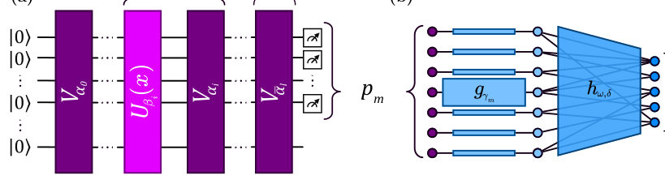
<figcaption class="paper-figure-caption"><b>Fig 1.</b> Figure 1: Hybrid quantum neural network architecture. (a) Our model consists of a quantum circuit with repeated trainable data encoding layers U and trainable entangling layers V . The circuit’s output state is measured on M qubits and basis state probabilities pm. (b) The probabilities are then fed into a classical post processing pipeline where polynomials g with trainable coefficients are applied to each pm and a weighted average h computes the final output.</figcaption>
</figure>
<figure class="paper-figure-card">

<figcaption class="paper-figure-caption"><b>Fig 2.</b> Figure 2: Evolution of our hyperparameter optimization objective for our hybrid QNN in (a) and FCNN architecture in (b). Each cross marks the R2 test performance of a single HPO trial model. Color brightness additionally encodes trial number, consistently to figures below. A dashed line marks the best model’s score up to the current state of the HPO.</figcaption>
</figure>
<figure class="paper-figure-card">
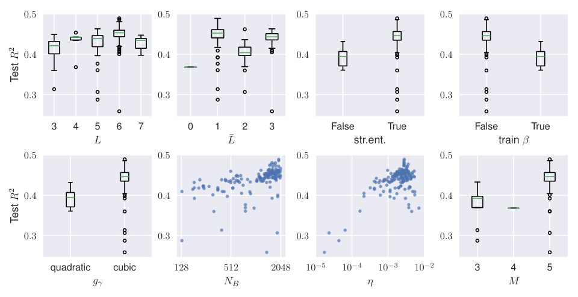
<figcaption class="paper-figure-caption"><b>Fig 3.</b> Figure 3: QNN performance slices for all hyperparameters throughout the HPO. The first row shows number of data reuploading layers L, additional variational layers ¯L, use of strongly entangling layers and whether to train reuploading factors β. The second row shows classical post-processing polynomial gγ, batch size NB, learning rate η, and number of measurement qubits M. Box-plots refer to discretized hyperparameters where in each box plot, the central green line denotes the median, the box spans the interquartile range (IQR, Q1–Q3), the whiskers extend to 1.5×IQR beyond the box edges, and individual dots mark outliers beyond the whiskers. For most hyperparameters, this data gives a clear...</figcaption>
</figure>
<figure class="paper-figure-card">

<figcaption class="paper-figure-caption"><b>Fig 4.</b> Figure 4: FCNN performance slices for all hyperparameters throughout the HPO. The first row shows activation function ϕ, batch size NB, learning rate η, and number of hidden layers LH. The bottom row shows number of kernels Kl for the respective hidden layer l. Box-plots refer to discretized hyperparameters where in each box plot, the central green line denotes the median, the box spans the interquartile range (IQR, Q1–Q3), the whiskers extend to 1.5×IQR beyond the box edges, and individual dots mark outliers beyond the whiskers. The optimized hyperparameters show good agreement with established standards in classical neural network literature. For instance, increasing the numbers of layers...</figcaption>
</figure>
<figure class="paper-figure-card">

<figcaption class="paper-figure-caption"><b>Fig 5.</b> Figure 5: (a) R2 scores of all targets for QNN and FCNN. For all models we have a score of R2 &gt; 0 but FCNN outperforms the best QNN for every output. (b) Effect of number of trainable parameters on model performance. Except for few outliers which arise from uncommon choices of hyperparameters, FCNNs consistently outperform the QNN model. However, we note that simple parameter count comparison should not be the only quantity to compare as we discuss in Sec. 5.</figcaption>
</figure>
</div>

<p><strong>Summary.</strong> This paper tests Quantum Machine Learning by applying hybrid QNNs to model cloud microphysics parameterizations crucial for climate science. Although the models show promise and benefit from extensive optimization, they fail to surpass optimized classical neural networks. The work highlights current bottlenecks in variational quantum models, suggesting that further theoretical and architectural improvements are needed before achieving practical quantum advantage.</p>
<p><strong>Why it may be interesting.</strong> Although focused on condensed matter applications (cloud physics), the core challenge—developing scalable variational quantum circuits that outperform classical ML methods—is highly relevant to understanding resource scaling in quantum computation for complex physical simulations.</p>
<details>
<summary>Detailed structure</summary>
<p><strong>Main problem.</strong> The paper assesses whether Quantum Machine Learning (QML) models, specifically Variational Quantum Circuits, can achieve a quantum advantage over classical counterparts when applied to complex physical parameterizations.</p>
<p><strong>Main result.</strong> While QNNs benefit from extensive hyperparameter optimization and show feasibility, they were ultimately outperformed by optimized classical fully-connected neural networks on the cloud microphysics dataset.</p>
<p><strong>Method.</strong> A hybrid Quantum Neural Network (QNN) architecture was trained using gradient descent to learn mappings between atmospheric state variables and their predicted changes. Performance was benchmarked against classical FCNNs.</p>
<p><strong>Model / system.</strong> The system involves modeling cloud microphysics parameterization for climate models, utilizing data on water phase transitions in the atmosphere. The model uses a QNN structure with data encoding layers and variational entanglement layers, followed by classical post-processing.</p>
<p><strong>Key observables.</strong> The primary performance metric is the $R^2$ score calculated on the test dataset after inverse preprocessing of the predicted tendencies ($\Delta$).</p>
<p><strong>Important parameters / regimes.</strong> Key hyperparameters optimized included circuit depth ($L$), measurement qubits ($M$), learning rate ($\eta$), and various encoding/variational layer parameters.</p>
<p><strong>Assumptions / limitations.</strong> The authors assume that a fair comparison requires restricting HPO ranges for both QNNs and FCNNs, and they acknowledge the difficulty in training on extreme outliers present in the physical data.</p>
<p><strong>Figures summary.</strong> Figure 1 illustrates the hybrid QNN architecture. Figure 2 shows the convergence of the objective function during Hyperparameter Optimization (HPO) for both QNN and FCNN approaches.</p>
<p><strong>Paper structure.</strong> The paper introduces the problem of QML feasibility in climate science, details the hybrid QNN/FCNN methodology using cloud microphysics data, presents extensive HPO results comparing architectures, analyzes bottlenecks like barren plateaus, and concludes by discussing necessary improvements for quantum models to be useful.</p>
</details>
<details>
<summary>Abstract</summary>
<p>Quantum machine learning (QML) could have the potential to leverage advantages of quantum over classical computing but still lacks strong evidence of actual improvements and scalability, partly due to phenomena such as barren plateaus. In this paper, we employ a hybrid quantum neural network (QNN) on a dataset on cloud microphysics, containing processes for phase transitions of water in the atmosphere and its related temperature changes, which are highly relevant for accurate climate predictions and projections. To reach optimal performance of our QNNs, we employ a rich and trainable frequency spectrum together with expressivity enhancing classical postprocessing. We find that our QNNs strongly benefit from extensive hyperparameter optimization and thereby demonstrate the feasibility of applying QNNs to complex physical systems. At the same time, the QNNs are outperformed by classical baselines in the form of simple fully-connected neural networks. We discuss identified bottlenecks of this class of quantum models to learn the full complexity of the cloud microphysics dataset to show that there is a need to further understand and improve variational quantum models for machine learning such that they might fill the gap where classical models fail or are inefficient.</p>
</details>
<p><sub><a href="#top">↑ back to top</a></sub></p>

<p><a id="paper-2607.04007"></a></p>
<h3 id="stellar-braid-monodromy-of-finite-rank-non-gaussian-photonic-states"><a href="http://arxiv.org/abs/2607.04007v1">Stellar Braid Monodromy of Finite-Rank Non-Gaussian Photonic States</a></h3>
<p><strong>Authors:</strong> Arnaud Coatanhay, Angelique Dremeau<br>
<strong>Type:</strong> theory · <strong>Category:</strong> other · <strong>PDF:</strong> <a href="https://arxiv.org/pdf/2607.04007v1">https://arxiv.org/pdf/2607.04007v1</a><br>
<strong>Analysis basis:</strong> full PDF text, analyzed in chunks
<strong>Topic relevance:</strong> <code>entanglement &amp; information structure</code> <strong>2/5</strong> · <code>Keldysh / 2PI / non-Gaussian methods</code> <strong>1/5</strong> · <code>analog quantum simulation</code> <strong>1/5</strong> · <code>driven-dissipative phase transition</code> <strong>1/5</strong></p>
<div class="figure-strip-hint">↔ Scroll figures horizontally</div>
<div class="paper-figures-scroll">
<figure class="paper-figure-card">

<figcaption class="paper-figure-caption"><b>Fig 1.</b> Figure 1: Two-strand stellar braid generated by the binomial family (93). The left panel follows the two stellar zeros in the complex plane as the phase of the finite-Fock state is wound once; the right panel shows a braid projection using the real parts of the transported zeros. The figure illustrates the basic mechanism of the paper: a loop of non-Gaussian states of fixed stellar degree can exchange its stellar zeros and thereby define an element of B2.</figcaption>
</figure>
<figure class="paper-figure-card">

<figcaption class="paper-figure-caption"><b>Fig 2.</b> Figure 2: Cyclic three-strand stellar braid for the cubic binomial loop (97). The zeros form an equilateral configuration and return to the same unordered divisor after a cyclic relabeling. This is the simplest visual example in which the cubic finite-Fock family realizes a nontrivial braid in B3.</figcaption>
</figure>
<figure class="paper-figure-card">

<figcaption class="paper-figure-caption"><b>Fig 3.</b> Figure 3: Quadratic discriminant loop and local half-twist. For FA(z) = 1 + Az + z2, the fixed-B slice has discriminant points A = ±2. A small loop around A = 2 produces a collision-avoiding exchange of the two stellar zeros near the double root. This is the local model behind the statement that a smooth point of the stellar discriminant produces an elementary half-twist.</figcaption>
</figure>
<figure class="paper-figure-card">

<figcaption class="paper-figure-caption"><b>Fig 4.</b> Figure 4: Asymmetric cubic half-twist for the trinomial slice FA(z) = 1+Az2 +z3. The loop in the A-plane surrounds one point of the discriminant A3 = −27/4. Along this loop two stellar zeros perform a local exchange while the third remains separated. The example shows that sparse finite-Fock slices realize local braid generators without relying on the high symmetry of the cubic binomial family.</figcaption>
</figure>
</div>

<p><strong>Summary.</strong> This paper introduces stellar braid monodromy as a novel, robust topological invariant for classifying finite-rank non-Gaussian bosonic states of light. By mapping the state space to an unordered configuration space, it shows that the movement of the state's defining zeros generates elements in the Artin braid group. This provides a powerful geometric tool complementing existing diagnostics like stellar rank.</p>
<p><strong>Why it may be interesting.</strong> This work provides a powerful topological tool for characterizing quantum resources (non-Gaussianity) in photonic systems that goes beyond simple algebraic measures, linking quantum optics directly to deep mathematical structures like braid groups.</p>
<details>
<summary>Detailed structure</summary>
<p><strong>Main problem.</strong> To assign a robust topological invariant, called stellar braid monodromy, to characterize regular parameterized families of finite-rank non-Gaussian bosonic quantum states.</p>
<p><strong>Main result.</strong> The regular stratum of these state spaces is biholomorphic to the unordered configuration space of $r$ points in $\mathbb{C}$, and its fundamental group is the Artin braid group. The resulting monodromy invariant complements existing scalar measures of non-Gaussianity.</p>
<p><strong>Method.</strong> The method involves mapping the quantum states (via their Bargmann representation) to a polynomial whose zeros define the stellar divisor. Braid monodromy is then calculated by tracking how these zeros move under continuous deformations in the state space, utilizing tools from algebraic topology and classical root theory.</p>
<p><strong>Model / system.</strong> The system concerns single-mode photonic quantum states restricted to finite-Fock subspaces $H_r$. These non-Gaussian states are mathematically characterized by a finite stellar divisor encoded within their Bargmann representation polynomial.</p>
<p><strong>Key observables.</strong> Stellar braid monodromy (an element of the Artin braid group $ ext{Br}$), Stellar Rank, Wigner negativity, and approximate stellar rank.</p>
<p><strong>Important parameters / regimes.</strong> The degree $r$ of the finite-rank state; parameters defining the path or family within the regular stratum.</p>
<p><strong>Assumptions / limitations.</strong> The analysis is restricted to 'regular' paths where all stellar zeros are simple, and it primarily concerns single-mode states, excluding mixed states or multi-mode dynamics.</p>
<p><strong>Figures summary.</strong> Not specified in the notes; the focus is on mathematical structures (configuration spaces, braid groups) rather than explicit figure descriptions.</p>
<p><strong>Paper structure.</strong> The paper establishes the connection between non-Gaussian states and polynomial zeros, identifies the regular stratum with a configuration space whose fundamental group is $  ext{Br}$, defines the monodromy invariant by tracking zero motion, and finally applies this to concrete physical examples like cubic subspaces.</p>
</details>
<details>
<summary>Abstract</summary>
<p>Finite-rank non-Gaussian bosonic states admit a holomorphic description in the Bargmann representation: after a zero-free Gaussian factor is separated off, their non-Gaussian structure is encoded by a finite stellar divisor. This article introduces a topological refinement of stellar rank for regular parameterized families of such states. Rather than only counting the zeros of the stellar divisor, we follow their motion under deformations of the state and record the associated braid monodromy. In the finite-Fock chart, a regular degree-r stellar state is represented by a monic polynomial with r simple zeros. The regular stratum is biholomorphic to the unordered configuration space of r points in the complex plane, and its fundamental group is the Artin braid group on r strands. Thus braid monodromy is an intrinsic invariant of loops in the regular finite-rank stellar state space. We then extend the construction to admissible finite stellar divisors of the form E_tau,mu(z) P(z); the zero-free Gaussian parameters form a contractible fiber over the same configuration-space base. Experimentally motivated finite-Fock families, especially the cubic subspace spanned by the first four Fock states, provide concrete laboratories, while trinomial slices yield explicit discriminants and local half-twists. The resulting invariant is post-tomographic and applies to preparation loops and parameterized families; it complements Wigner negativity, stellar rank, approximate stellar rank, and other scalar diagnostics of non-Gaussianity.</p>
</details>
<p><sub><a href="#top">↑ back to top</a></sub></p>

<p><a id="paper-2607.04863"></a></p>
<h3 id="uniform-distributions-in-nonuniform-systems-wall-potentials-generating-constant-density-profiles-in-classical-density-functional-theory"><a href="http://arxiv.org/abs/2607.04863v1">Uniform distributions in nonuniform systems: Wall potentials generating constant density profiles in classical density functional theory</a></h3>
<p><strong>Authors:</strong> Jiří Janek, Alexandr Malijevský<br>
<strong>Type:</strong> theory · <strong>Category:</strong> statistical mechanics · <strong>PDF:</strong> <a href="https://arxiv.org/pdf/2607.04863v1">https://arxiv.org/pdf/2607.04863v1</a><br>
<strong>Analysis basis:</strong> full PDF text, analyzed in chunks
<strong>Topic relevance:</strong> <code>Keldysh / 2PI / non-Gaussian methods</code> <strong>2/5</strong> · <code>analog quantum simulation</code> <strong>1/5</strong> · <code>methods for driven-dissipative</code> <strong>1/5</strong> · <code>non-equilibrium dynamics</code> <strong>1/5</strong></p>
<div class="figure-strip-hint">↔ Scroll figures horizontally</div>
<div class="paper-figures-scroll">
<figure class="paper-figure-card">
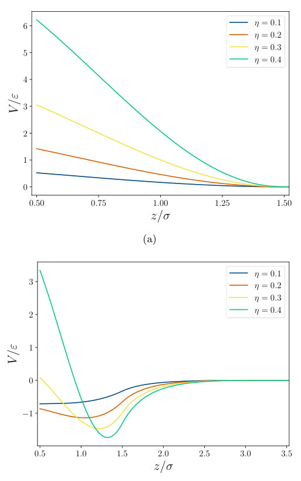
<figcaption class="paper-figure-caption"><b>Fig 1.</b> FIG. 1. Planar wall potential that generates the prescribed constant density profile for several packing fractions η. (a) Hard-sphere fluid. (b) Fluid with attractive interactions for T = 1.5 k−1 B ε.</figcaption>
</figure>
<figure class="paper-figure-card">

<figcaption class="paper-figure-caption"><b>Fig 2.</b> FIG. 3. Hard-sphere wall potential in spherical geometry, V sph. HS (r −ϱ), for η = 0.2. Results for two sphere radii are compared with the planar limit V pl. HS (z). The effect of curva- ture is relatively weak in the purely repulsive system.</figcaption>
</figure>
<figure class="paper-figure-card">

<figcaption class="paper-figure-caption"><b>Fig 3.</b> FIG. 2. DFT density profiles in planar geometry obtained with the analytically constructed external potentials. (a) Hard-sphere fluid. (b) Fluid with truncated Lennard-Jones attraction at T = 1.5 ε/kB. Several grid spacings are shown, demonstrating convergence toward the prescribed flat profile.</figcaption>
</figure>
<figure class="paper-figure-card">

<figcaption class="paper-figure-caption"><b>Fig 4.</b> FIG. 4. Wall potential in spherical geometry for the fluid with attractive interactions, V sph. LJ (r −ϱ), shown for several sphere radii and compared with the planar result. For η = 0.2 and T = 1.5 k−1 B ε. In contrast to the hard-sphere case, curvature has a more pronounced effect on the depth and position of the attractive minimum.</figcaption>
</figure>
<figure class="paper-figure-card">
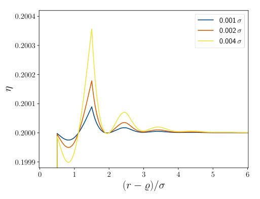
<figcaption class="paper-figure-caption"><b>Fig 5.</b> FIG. 5. DFT density profiles in spherical geometry for ηb = 0.2, ϱ = 3σ, and T = 1.5 k−1 B ε, using the derived external potentials. (a) Hard-sphere fluid. (b) Fluid with attractive interactions. Several grid spacings are shown, demonstrating convergence toward the prescribed flat profile.</figcaption>
</figure>
</div>

<p><strong>Summary.</strong> This theoretical work tackles an inverse problem in Density Functional Theory by calculating the precise external wall potential needed to force a fluid's density profile to remain constant near a substrate. Using FMT, the authors derive explicit analytical solutions for planar and spherical geometries, providing powerful tools for understanding structure-cancelling boundary fields.</p>
<p><strong>Why it may be interesting.</strong> While purely classical, the rigorous application of DFT and FMT to control boundary conditions is foundational knowledge for understanding confinement effects relevant to quantum systems like ultracold atoms near surfaces or optical lattices.</p>
<details>
<summary>Detailed structure</summary>
<p><strong>Main problem.</strong> The study solves the inverse problem of classical Density Functional Theory (DFT): determining the external wall potential required to enforce a constant equilibrium density profile near an inhomogeneous substrate.</p>
<p><strong>Main result.</strong> Explicit analytical expressions for 'structure-cancelling' wall potentials are derived for planar and spherical geometries, confirming that these potentials successfully recover the prescribed flat density profiles in independent DFT calculations.</p>
<p><strong>Method.</strong> The authors utilize Fundamental Measure Theory (FMT) within the framework of classical DFT to derive self-consistent equations relating the required potential to the direct correlation functions and weighted densities.</p>
<p><strong>Model / system.</strong> The system is a one-component fluid modeled using hard-sphere repulsion, optionally supplemented by a mean-field treated truncated Lennard-Jones attraction. The analysis covers planar, spherical, and cylindrical confinement geometries.</p>
<p><strong>Key observables.</strong> Equilibrium density profile ($
ho(r)$), the required wall potential ($V(r)$), weighted densities ($n_\alpha$), and one-body direct correlation functions ($c^{(1)}$).</p>
<p><strong>Important parameters / regimes.</strong> The geometry (planar, spherical, cylindrical) dictates the mathematical tractability; the interaction strength (hard-sphere vs. attractive tail) influences the required potential.</p>
<p><strong>Assumptions / limitations.</strong> The analysis relies on solving the Euler-Lagrange equation derived from minimizing the grand-potential functional, and the attraction is treated only at the mean-field level.</p>
<p><strong>Figures summary.</strong> Figures likely compare calculated density profiles against a constant reference value, demonstrating the accuracy of the constructed potentials across different geometries (e.g., planar vs. spherical).</p>
<p><strong>Paper structure.</strong> The paper systematically tackles the inverse problem for three symmetries (planar, spherical, cylindrical), deriving explicit mathematical forms for weighted densities and correlation functions in each case before presenting the final wall potential required to maintain a constant density.</p>
</details>
<details>
<summary>Abstract</summary>
<p>We study the inverse problem of classical density functional theory for inhomogeneous fluids: finding the wall potential that produces a constant equilibrium density profile, i.e., a perfectly flat density distribution in the accessible region adjacent to a substrate. Within Rosenfeld's fundamental measure theory, we solve this problem for a one-component fluid in planar, spherical, and cylindrical geometries, considering both a hard-sphere fluid and a fluid with an additional truncated Lennard-Jones attraction treated at the mean-field level. Explicit analytical expressions are obtained for planar walls, while spherical walls also admit an analytical treatment in a more cumbersome form. The cylindrical case is treated numerically. The construction provides an explicit microscopic realization of structure-cancelling wall fields, related to flat-profile conditions that occur under special matching conditions in interfacial theories of wetting and drying. The theory also yields a compact collection of formulae for weighted densities and one-body direct correlation functions in the three fundamental geometries, providing useful reference expressions for density-functional implementations. The resulting analytic wall potentials are validated in independent density functional calculations, which confirm that the prescribed flat profiles are recovered within numerical accuracy.</p>
</details>
<p><sub><a href="#top">↑ back to top</a></sub></p>

<p><a id="paper-2607.05308"></a></p>
<h3 id="a-universal-emulator-for-planar-ising-lattices"><a href="http://arxiv.org/abs/2607.05308v1">A universal emulator for planar Ising lattices</a></h3>
<p><strong>Authors:</strong> Riccardo Ben Alì Zinati, Alessandro Codello<br>
<strong>Type:</strong> theory · <strong>Category:</strong> statistical mechanics · <strong>PDF:</strong> <a href="https://arxiv.org/pdf/2607.05308v1">https://arxiv.org/pdf/2607.05308v1</a><br>
<strong>Analysis basis:</strong> full PDF text, analyzed in chunks
<strong>Topic relevance:</strong> <code>analog quantum simulation</code> <strong>2/5</strong> · <code>Keldysh / 2PI / non-Gaussian methods</code> <strong>1/5</strong></p>
<div class="figure-strip-hint">↔ Scroll figures horizontally</div>
<div class="paper-figures-scroll">
<figure class="paper-figure-card">

<figcaption class="paper-figure-caption"><b>Fig 1.</b> Low-resolution page preview, page 2</figcaption>
</figure>
<figure class="paper-figure-card">

<figcaption class="paper-figure-caption"><b>Fig 2.</b> Low-resolution page preview, page 3</figcaption>
</figure>
<figure class="paper-figure-card">

<figcaption class="paper-figure-caption"><b>Fig 3.</b> Low-resolution page preview, page 4</figcaption>
</figure>
<figure class="paper-figure-card">

<figcaption class="paper-figure-caption"><b>Fig 4.</b> Low-resolution page preview, page 5</figcaption>
</figure>
<figure class="paper-figure-card">
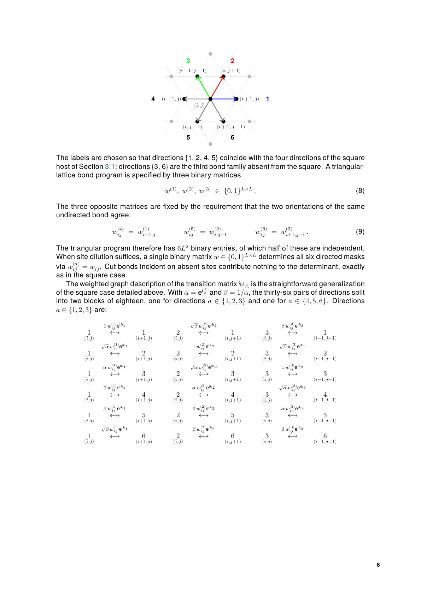
<figcaption class="paper-figure-caption"><b>Fig 5.</b> Low-resolution page preview, page 6</figcaption>
</figure>
</div>

<p><strong>Summary.</strong> This paper introduces an "Ising emulator," a universal computational framework that calculates the thermodynamics of diverse planar Ising lattices by representing them as dilutions of a single host lattice. By using the Feynman–Vdovichenko/Kac–Ward determinant, the authors demonstrate this method's power across numerous complex and disordered lattice geometries.</p>
<p><strong>Why it may be interesting.</strong> While focused on classical statistical mechanics, the concept of using a fixed 'host' structure with variable masks to model complex systems is analogous to defining effective Hamiltonians or transfer matrices in open quantum systems or quantum simulation contexts.</p>
<details>
<summary>Detailed structure</summary>
<p><strong>Main problem.</strong> To develop a universal computational framework (an "Ising emulator") for calculating thermodynamic properties of various planar Ising lattices.</p>
<p><strong>Main result.</strong> The framework successfully applies to all eleven Archimedean lattices, twenty 2-uniform lattices, and extends directly to fractal and disordered Ising models using a single underlying machinery.</p>
<p><strong>Method.</strong> It represents any target lattice ($\Lambda$) as a site or bond dilution of a fixed host lattice ($\mathcal{H}$), allowing thermodynamic calculations via the Feynman–Vdovichenko/Kac–Ward determinant formula.</p>
<p><strong>Model / system.</strong> The system is the two-dimensional Ising model on planar lattices. The analysis uses an emulator approach by embedding the target lattice into a regular host (square or triangular) to calculate partition functions and thermodynamic quantities.</p>
<p><strong>Key observables.</strong> Free energy, critical temperature ($T_c$), specific heat, entropy, and internal energy per spin.</p>
<p><strong>Important parameters / regimes.</strong> Temperature ($T$), coupling constants ($\epsilon_c$, $\epsilon_{AF}$), and lattice structure/size parameters (e.g., $L$).</p>
<p><strong>Assumptions / limitations.</strong> The core assumption is that thermodynamic properties are invariant under continuous topological deformations, allowing the use of a fixed host lattice for all calculations.</p>
<p><strong>Figures summary.</strong> The notes indicate the presence of large, structured tables comparing calculated physical properties (Free energy, Specific heat $w(i)$, etc.) across numerous specific lattice types and sizes.</p>
<p><strong>Paper structure.</strong> The paper introduces the emulator concept using the FV/KW method, details the construction for different hosts ($\square$ vs $   riangle$), applies this framework systematically to various classes of lattices (Archimedean, 2-uniform), and presents results in comparative tables across multiple lattice configurations.</p>
</details>
<details>
<summary>Abstract</summary>
<p>We introduce the notion of an Ising emulator for two-dimensional Ising models: flat, unit-edge-length lattices can be represented as site- or bond-diluted supercells of a single host lattice, for which the Feynman--Vdovichenko/Kac--Ward solution is fixed once and for all. We construct explicit square and triangular emulators and show that a single transition matrix, supplemented by lattice-specific binary masks, gives all the thermodynamic quantities of interest for both ferro- and antiferromagnetic couplings. We apply the framework to all eleven Archimedean lattices, to all twenty $2$-uniform lattices -- whose thermodynamics is obtained here for the first time -- and to several pentagonal lattices, and show that the same construction extends directly to fractal and disordered Ising models, with no modification to the underlying machinery.</p>
</details>
<p><sub><a href="#top">↑ back to top</a></sub></p>

<p><a id="paper-2607.04845"></a></p>
<h3 id="hamqasbench-a-hamiltonian-informed-diagnostic-benchmark-for-evaluating-quantum-architecture-search"><a href="http://arxiv.org/abs/2607.04845v1">HamQASBench: A Hamiltonian-Informed Diagnostic Benchmark for Evaluating Quantum Architecture Search</a></h3>
<p><strong>Authors:</strong> Jiayang Niu, Akib Karim, Yan Wang, Jie Li, Ke Deng, Azadeh Alavi, Muhammad Usman, Yongli Ren<br>
<strong>Type:</strong> theory · <strong>Category:</strong> quantum information and computing · <strong>PDF:</strong> <a href="https://arxiv.org/pdf/2607.04845v1">https://arxiv.org/pdf/2607.04845v1</a><br>
<strong>Analysis basis:</strong> full PDF text, analyzed in chunks
<strong>Topic relevance:</strong> <code>entanglement &amp; information structure</code> <strong>2/5</strong> · <code>analog quantum simulation</code> <strong>1/5</strong></p>
<div class="figure-strip-hint">↔ Scroll figures horizontally</div>
<div class="paper-figures-scroll">
<figure class="paper-figure-card">
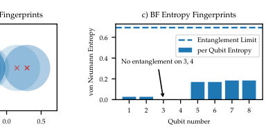
<figcaption class="paper-figure-caption"><b>Fig 1.</b> Figure 1: Visual illustration of Hamiltonian structural fingerprints for various molecules.</figcaption>
</figure>
<figure class="paper-figure-card">

<figcaption class="paper-figure-caption"><b>Fig 2.</b> Figure 2: Critical-structure analysis. (a,b) Tier 1 circuits collapse to 2-gate minimal forms. (c,d) Tier 2 yields two structurally distinct circuits targeting orthogonal degenerate eigenstates of CH2.</figcaption>
</figure>
</div>

<p><strong>Summary.</strong> This paper introduces HamQASBench, a novel benchmark that evaluates Quantum Architecture Search (QAS) by incorporating detailed structural information derived from molecular Hamiltonians. By organizing test cases into five distinct structural tiers—ranging from simple product states to highly correlated systems—it reveals failure modes in current QAS methods that are invisible when only energy accuracy is considered.</p>
<p><strong>Why it may be interesting.</strong> It provides a rigorous framework for testing quantum algorithms beyond simple energy minimization, forcing the evaluation of circuit structure relative to physical constraints, which is crucial for hardware-efficient algorithm design.</p>
<details>
<summary>Detailed structure</summary>
<p><strong>Main problem.</strong> Existing benchmarks for Quantum Architecture Search (QAS) are insufficient because they ignore the underlying structural properties of the Hamiltonian, leading to failure modes undetectable by energy accuracy alone.</p>
<p><strong>Main result.</strong> The proposed HamQASBench organizes molecules into five structural tiers based on Hamiltonian fingerprints, revealing critical failure modes in QAS methods such as over-parameterization and representation bottlenecks.</p>
<p><strong>Method.</strong> The authors introduce a Hamiltonian-informed diagnostic benchmark that combines structural fingerprinting (from Pauli basis, computational basis, entanglement) with post-hoc critical-structure extraction procedures.</p>
<p><strong>Model / system.</strong> The study focuses on simulating molecular electronic structure using Variational Quantum Algorithms (VQAs), specifically analyzing the qubit Hamiltonians derived from molecules like BeH2 and H4 chains.</p>
<p><strong>Key observables.</strong> Structural fingerprints ($r_Z, G_1, G_2$), per-qubit von Neumann entropy ($    ext{MAES}$), pairwise state fidelity ($F_{ij}$), training-evaluation gap, and redundancy ratio ($
ho$).</p>
<p><strong>Important parameters / regimes.</strong> Five structural tiers (Minimalism, Degeneracy, Representation, Topology, Scalability) define the test regimes; chemical accuracy is targeted at $1.6 	ext{ mHa}$.</p>
<p><strong>Assumptions / limitations.</strong> Energy accuracy alone is insufficient for diagnosing structural appropriateness; structural consistency metrics ($   ext{MAES}, F_{ij}$) are necessary to validate learned circuit structures.</p>
<p><strong>Figures summary.</strong> Figures illustrate Hamiltonian structural fingerprints and show how performance degrades when connectivity constraints (topology) are imposed, decoupling structural fidelity from energy metrics.</p>
<p><strong>Paper structure.</strong> The paper first identifies the shortcomings of current QAS benchmarks. It then details HamQASBench by defining its five structural tiers based on comprehensive Hamiltonian analysis. Finally, it benchmarks several QAS methods across these tiers, analyzing failure modes like over-parameterization and scalability limits.</p>
</details>
<details>
<summary>Abstract</summary>
<p>Quantum Architecture Search (QAS) automates the design of parameterized quantum circuits for variational quantum algorithms, yet existing benchmarks organize instances by molecular identity or qubit count -- criteria agnostic to Hamiltonian structure -- and rely solely on energy accuracy, which cannot detect structural failures such as over-parameterization on near-product ground states. We introduce HamQASBench, a Hamiltonian-informed diagnostic benchmark organizing 11 molecules into five structural tiers via fingerprints derived from the Pauli operator basis, computational basis representation, and ground-state entanglement. A post-hoc critical-structure extraction procedure identifies minimal circuits consistent with each tier's requirements, complementing energy-based evaluation with per-qubit entanglement analysis and pairwise state fidelity. Benchmarking five QAS methods across four paradigms reveals failure modes invisible to conventional metrics: over-parameterization in the minimalism regime, eigenstate commitment under degeneracy, a representation bottleneck in strongly correlated systems, topology-induced routing failure, and circuit search space growth as a scalability bottleneck.</p>
</details>
<p><sub><a href="#top">↑ back to top</a></sub></p>

<p><a id="paper-2607.04462"></a></p>
<h3 id="noise-aware-synthesis-of-quantum-ldpc-encoder-circuits-via-two-sided-hamming-descent"><a href="http://arxiv.org/abs/2607.04462v1">Noise-Aware Synthesis of Quantum LDPC Encoder Circuits via Two-Sided Hamming Descent</a></h3>
<p><strong>Authors:</strong> Aditya Sodhani, Keshab K. Parhi<br>
<strong>Type:</strong> theory · <strong>Category:</strong> quantum information and computing · <strong>PDF:</strong> <a href="https://arxiv.org/pdf/2607.04462v1">https://arxiv.org/pdf/2607.04462v1</a><br>
<strong>Analysis basis:</strong> full PDF text, analyzed in chunks
<strong>Topic relevance:</strong> <code>QC/QI experiment</code> <strong>2/5</strong> · <code>methods for driven-dissipative</code> <strong>1/5</strong></p>
<div class="figure-strip-hint">↔ Scroll figures horizontally</div>
<div class="paper-figures-scroll">
<figure class="paper-figure-card">

<figcaption class="paper-figure-caption"><b>Fig 1.</b> Figure 1: Our six-stage noise-aware encoder pipeline.</figcaption>
</figure>
<figure class="paper-figure-card">

<figcaption class="paper-figure-caption"><b>Fig 2.</b> Figure 2: The same matrix 𝑀= 𝐼+ 𝑒0𝑒⊤ 2 on three qubits is realized by CNOT circuits of different length, hence by the same unitary. (a) one gate; (b) three gates. Filled dots are controls, ⊕targets.</figcaption>
</figure>
<figure class="paper-figure-card">
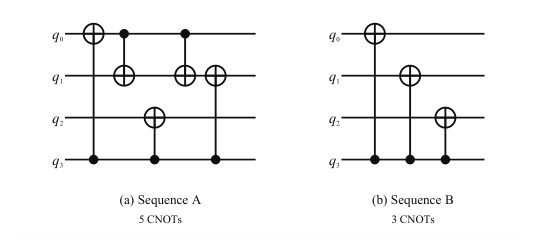
<figcaption class="paper-figure-caption"><b>Fig 3.</b> Figure 3: The same four-qubit matrix 𝑀is implemented by two CNOT circuits of different gate count, so the shorter one replaces the longer. (a) five gates; (b) three gates. Filled dots are controls, ⊕targets.</figcaption>
</figure>
<figure class="paper-figure-card">
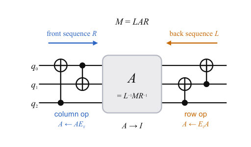
<figcaption class="paper-figure-caption"><b>Fig 4.</b> Figure 4: The two-sided move space reduces the residual 𝐴to the identity from both ends. Front (column-operation) and back (row-operation) moves act on 𝐴while maintaining 𝑀= 𝐿𝐴𝑅. See Section 3.1.</figcaption>
</figure>
<figure class="paper-figure-card">

<figcaption class="paper-figure-caption"><b>Fig 5.</b> Figure 5: Count–depth Pareto frontiers on the four BB codes. The two-sided front (blue, ours) dominates the one-sided ablation front (orange), the depth-greedy method of [32] (green), and the CG/SKG construction (gray) on both count and depth for every BB code. The depth-greedy front is the Pareto-optimal subset of that method’s four cost functions over many restarts.</figcaption>
</figure>
</div>

<p><strong>Summary.</strong> This paper presents a compiler-level tool to synthesize quantum circuits for preparing LDPC code states by treating it as an algebraic matrix resynthesis problem. The authors introduce 'two-sided Hamming descent' and integrate this with noise-aware scheduling, achieving substantial reductions in gate count and depth compared to existing methods. This work provides a blueprint for optimizing resource usage when implementing complex quantum error correction protocols on real hardware.</p>
<p><strong>Why it may be interesting.</strong> While focused on quantum error correction codes rather than AMO systems directly, the underlying principles of circuit synthesis, resource minimization (gates/depth), and noise modeling are highly relevant for designing control pulses or implementing complex gates in trapped ion or superconducting qubit architectures.</p>
<details>
<summary>Detailed structure</summary>
<p><strong>Main problem.</strong> The core problem is efficiently synthesizing low-cost, noise-mitigating quantum circuits required to prepare encoded states for Quantum Low-Density Parity-Check (LDPC) codes.</p>
<p><strong>Main result.</strong> The proposed pipeline significantly reduces CNOT gate counts by up to 68% and two-qubit depth by up to 71% compared to standard constructions, leading to higher fidelity state preparation under noise.</p>
<p><strong>Method.</strong> It employs a novel optimization pipeline combining Two-sided Hamming Descent for circuit resynthesis with hardware-aware post-processing steps like commutation re-layering and live-range scheduling.</p>
<p><strong>Model / system.</strong> The system involves fault-tolerant quantum computation using CSS LDPC codes (e.g., Bivariate Bicycle). The task is to find a minimal CNOT circuit realizing the linear transformation matrix defined by the encoder's CNOT block.</p>
<p><strong>Key observables.</strong> CNOT gate count, circuit depth (ASAP vs. commutation-aware), routed two-qubit depth, and preparation error under hardware noise.</p>
<p><strong>Important parameters / regimes.</strong> The optimization involves tuning parameters like the idle-to-gate error ratio ($\kappa$) and assessing initial reset error ($p_{	ext{reset}}$).</p>
<p><strong>Assumptions / limitations.</strong> The method assumes that circuit redundancy can be removed via algebraic matrix reduction, and that hardware constraints (connectivity, idle time) significantly contribute to preparation error.</p>
<p><strong>Figures summary.</strong> Figures illustrate the six-stage noise-aware encoder pipeline; other figures demonstrate the realization of the same unitary matrix with different lengths, confirming the synthesis problem.</p>
<p><strong>Paper structure.</strong> The paper introduces the problem by noting redundancy in standard constructions. It details the novel two-sided Hamming descent optimization, followed by integrating this into a full pipeline that includes commutation re-layering and noise-aware scheduling to achieve hardware-optimal circuits.</p>
</details>
<details>
<summary>Abstract</summary>
<p>Quantum low-density parity-check (LDPC) codes are a promising route to fault-tolerant quantum computation, but their use requires efficient preparation of encoded states. Standard encoder constructions generate circuits through fixed algebraic procedures, yet the resulting circuit can contain substantial redundancy. We formulate LDPC encoder preparation as a circuit-resynthesis problem: given the linear-reversible matrix implemented by the encoder's CNOT block, we seek a lower-cost equivalent circuit that can be routed efficiently on the target hardware and which mitigates noise. We propose a novel optimization approach referred as two-sided Hamming descent and a noise-aware optimization pipeline for this task.   Across several families of Calderbank-Shor-Steane (CSS) LDPC encoders, including Bivariate Bicycle, hypergraph-product, and entanglement-assisted codes, the proposed pipeline produces substantially smaller and shallower encoder circuits than the standard constructions and the synthesis baselines considered, cutting gate counts by 53.8% in aggregate across the benchmark and by up to 68% on the Bivariate Bicycle family. The gains remain visible after routing, where the two-qubit depth is reduced by up to 71% and translate into higher-fidelity state preparation under circuit-level noise. On the Bivariate Bicycle family, live-range scheduling further reduces routed preparation failure by up to 13.7% without adding two-qubit gates to the selected circuit. These results indicate that encoder-matrix resynthesis, combined with hardware-calibrated selection and scheduling, is an effective compiler-level tool for preparing quantum LDPC code states.</p>
</details>
<p><sub><a href="#top">↑ back to top</a></sub></p>

<p><a id="paper-2607.04082"></a></p>
<h3 id="a-cross-platform-analysis-of-high-performance-quantum-error-correction-codes"><a href="http://arxiv.org/abs/2607.04082v1">A Cross-Platform Analysis of High-Performance Quantum Error Correction Codes</a></h3>
<p><strong>Authors:</strong> Bryan Pan, Yufeng Xin<br>
<strong>Type:</strong> theory · <strong>Category:</strong> quantum information and computing · <strong>PDF:</strong> <a href="https://arxiv.org/pdf/2607.04082v1">https://arxiv.org/pdf/2607.04082v1</a><br>
<strong>Analysis basis:</strong> full PDF text, analyzed in chunks
<strong>Topic relevance:</strong> <code>QC/QI experiment</code> <strong>2/5</strong></p>
<div class="figure-strip-hint">↔ Scroll figures horizontally</div>
<div class="paper-figures-scroll">
<figure class="paper-figure-card">
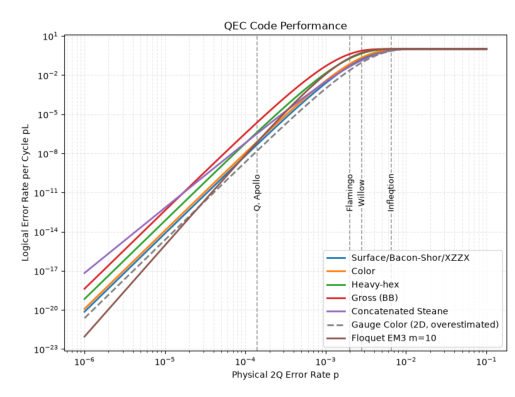
<figcaption class="paper-figure-caption"><b>Fig 1.</b> Fig. 1: Logical error estimates per round vs. two-qubit error rate for different QEC codes</figcaption>
</figure>
<figure class="paper-figure-card">

<figcaption class="paper-figure-caption"><b>Fig 2.</b> Fig. 2: Distributed-QPU logical error estimate as a function of QPU count. Each QPU assumed to support 200 physical qubits, nphys ≈ 2d2, N2Q ≈11d2, and Ninter = 4d(q −1).</figcaption>
</figure>
<figure class="paper-figure-card">
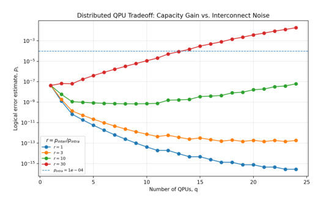
<figcaption class="paper-figure-caption"><b>Fig 3.</b> Figure 2 shows the resulting logical error estimates as a function of the number of QPUs for different interconnect noise ratios defined as</figcaption>
</figure>
<figure class="paper-figure-card">

<figcaption class="paper-figure-caption"><b>Fig 4.</b> Fig. 3: Distributed-QPU BB logical error estimate as a function of QPU count. The model uses pintra = 10−4, N BB 2Q ≈18d2 and nBB phys ≈ d2 with λ = 0.25.</figcaption>
</figure>
<figure class="paper-figure-card">
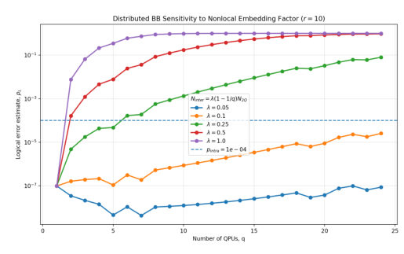
<figcaption class="paper-figure-caption"><b>Fig 5.</b> Fig. 4: Sensitivity of the distributed BB analytical model to the nonlocal embedding factor λ for fixed pintra = 10−4 and r = 10.</figcaption>
</figure>
</div>

<p><strong>Summary.</strong> This paper introduces a simple yet unified analytical framework to estimate the logical error rates of advanced Quantum Error Correction codes across diverse hardware platforms. By quantifying contributions from code structure and gate overheads, it allows researchers to rapidly identify performance bottlenecks in superconducting, trapped-ion, and distributed quantum systems. This work is critical for guiding the design toward scalable, fault-tolerant quantum computation.</p>
<p><strong>Why it may be interesting.</strong> It provides a crucial theoretical tool for benchmarking different physical implementations (trapped ions vs. superconducting) against abstract coding theory requirements, which is vital for experimentalists designing fault-tolerant quantum processors.</p>
<details>
<summary>Detailed structure</summary>
<p><strong>Main problem.</strong> Developing scalable quantum computers is hindered by physical noise and limited qubit counts, necessitating efficient Quantum Error Correction (QEC).</p>
<p><strong>Main result.</strong> The authors present a unified analytical framework to estimate logical error rates for advanced QEC codes across various hardware platforms.</p>
<p><strong>Method.</strong> They use an analytical framework that models logical failure based on the probability of exceeding a code's correctable fault threshold, separating contributions from code structure and two-qubit gate overhead.</p>
<p><strong>Model / system.</strong> The analysis covers five advanced QEC codes (e.g., topological, qLDPC) applied to leading hardware platforms like superconducting circuits, trapped ions, and distributed quantum computing setups.</p>
<p><strong>Key observables.</strong> Logical error rates ($p_L$), circuit volume decomposition ($N_{loc}$), and the identification of design 'sweet spots' in DQC.</p>
<p><strong>Important parameters / regimes.</strong> Physical error rate ($p_{loc}$), code parameters ($[[n, k, d]]$), connectivity overheads (SWAP gates, routing).</p>
<p><strong>Assumptions / limitations.</strong> The framework assumes the ability to separate intra-QPU and inter-QPU error sources for distributed systems; it also simplifies noise models compared to full-stack simulations.</p>
<p><strong>Figures summary.</strong> Not specified in the notes, but the analysis compares performance across different codes and hardware platforms.</p>
<p><strong>Paper structure.</strong> The paper introduces the problem of scalability, details the unified analytical framework by modeling error contributions, applies this framework to five code families on multiple hardware types, and concludes by identifying design optimization regions.</p>
</details>
<details>
<summary>Abstract</summary>
<p>The theory of quantum error correction was established decades ago. Yet the limitation of the quantum computing platforms in terms of noise level and available physical qubit count persists, which greatly hinders the development of scalable quantum computing systems. In this paper, we present analytical estimates of logical error rates of advanced QEC codes across leading hardware platforms and distributed quantum computing systems using a simple but unified framework. The analysis captures two dominant contributors to logical error: code structure and two-qubit gate overhead. The framework provides a fast estimate of logical error rates and identification of dominating factors in different hardware platforms, such as circuit volume, routing overhead, inter-QPU operations, or asymmetric noise protection. We show that several qualitative trends observed in larger-scale simulations can be reproduced and interpreted analytically within this framework. We further demonstrate that the framework can be used to find the sweet spot design region of distributed QEC, which is critical for the design of distributed quantum computing systems.</p>
</details>
<p><sub><a href="#top">↑ back to top</a></sub></p>

<p><a id="paper-2607.04598"></a></p>
<h3 id="breaking-the-one-dimensional-expressibility-trainability-tradeoff"><a href="http://arxiv.org/abs/2607.04598v1">Breaking the One-Dimensional Expressibility-Trainability Tradeoff</a></h3>
<p><strong>Authors:</strong> Kyoungho Cho, Yu-Seong Jeon, Jinhyoung Lee, Jeongho Bang<br>
<strong>Type:</strong> theory · <strong>Category:</strong> quantum information and computing · <strong>PDF:</strong> <a href="https://arxiv.org/pdf/2607.04598v1">https://arxiv.org/pdf/2607.04598v1</a><br>
<strong>Analysis basis:</strong> full PDF text, analyzed in chunks
<strong>Topic relevance:</strong> <code>entanglement &amp; information structure</code> <strong>2/5</strong></p>
<div class="figure-strip-hint">↔ Scroll figures horizontally</div>
<div class="paper-figures-scroll">
<figure class="paper-figure-card">

<figcaption class="paper-figure-caption"><b>Fig 1.</b> FIG. 1. Ansatz trajectories in the EP-EPD two-dial plane for n = 5, 10, 15, 20. Curves denote ansatz families; markers trace L = 1, . . . , 6, with labels at the first and final depths and arrows in the increasing-L direction. The axes are the coverage and variability dials in Eq. (17). Gray, green, and red mark the underexpressive, sweet-spot, and near-plateau regimes in Eq. (20), with thresholds fixed by Eq. (19).</figcaption>
</figure>
<figure class="paper-figure-card">

<figcaption class="paper-figure-caption"><b>Fig 2.</b> FIG. 2. Task-level validation on the n = 5 route plane. Points are ansatz-depth pairs, color is empirical success probability, and dashed lines are xc, yc. High coverage with low EPD is less favorable for training.</figcaption>
</figure>
<figure class="paper-figure-card">
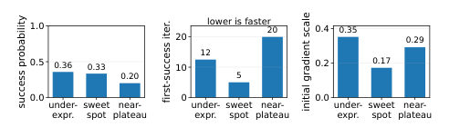
<figcaption class="paper-figure-caption"><b>Fig 3.</b> FIG. 3. Region-wise diagnostics: success probability, first-success iteration (lower is faster), and initial SPSA gradient scale. The sweet region is the fastest high-coverage region and outperforms near- plateau in success probability.</figcaption>
</figure>
<figure class="paper-figure-card">
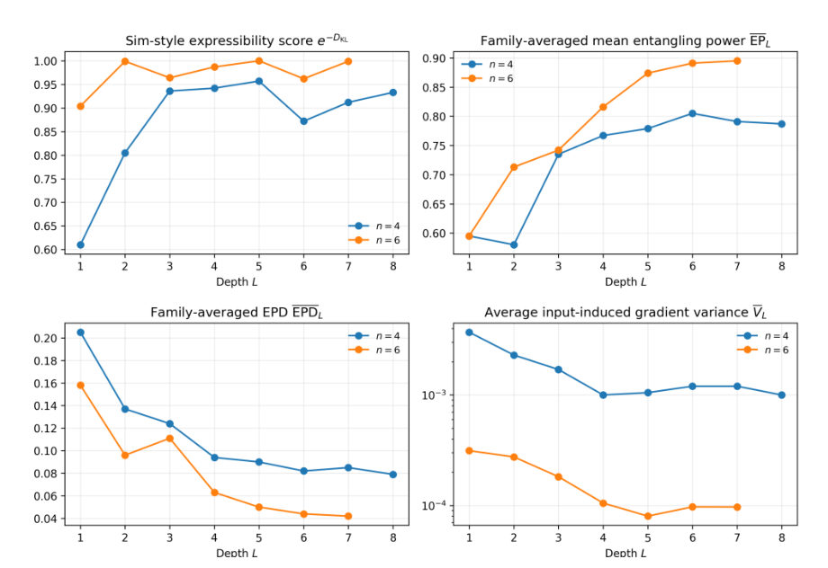
<figcaption class="paper-figure-caption"><b>Fig 4.</b> FIG. 4. Depth scan for the ring-CZ hardware-efficient ansatz. The four panels show the Sim-style coverage proxy, family-averaged EP, family- averaged EPD, and the input-induced variance of a representative gradient. The key feature is the mismatch between the early saturation of the coverage proxy and the later collapse of EPD and the gradient scale.</figcaption>
</figure>
<figure class="paper-figure-card">

<figcaption class="paper-figure-caption"><b>Fig 5.</b> FIG. 5. Normalized onset comparison for the n = 6 ring-CZ ansatz. The coverage proxy reaches a near-ceiling value at L = 2, while EPD and the representative gradient variance both pass their half-collapse thresholds at L = 4 in this finite-sample run.</figcaption>
</figure>
</div>

<p><strong>Summary.</strong> This work refutes the simple one-dimensional tradeoff between how much a quantum circuit can explore Hilbert space (expressibility) and how easily it can be trained (trainability). By introducing Entangling-Power Deviation (EPD), the authors propose that ansatz design should target a 'sweet spot' region characterized by high coverage but low input variability, offering a practical guide for building robust PQCs.</p>
<p><strong>Why it may be interesting.</strong> The development of a multi-parameter design rule ($  ext{EP}/    ext{EPD}$) provides concrete, actionable guidelines for designing variational quantum algorithms, which is crucial for practical applications in quantum simulation and computation.</p>
<details>
<summary>Detailed structure</summary>
<p><strong>Main problem.</strong> The paper challenges the assumption that expressibility (Hilbert-space coverage) and trainability in Parameterized Quantum Circuits (PQCs) are governed by a single, one-dimensional tradeoff.</p>
<p><strong>Main result.</strong> It establishes that this relationship is multi-faceted, proposing an $ ext{EP}/    ext{EPD}$ 'two-dial design rule' where high expressibility can be maintained while avoiding barren plateaus.</p>
<p><strong>Method.</strong> The authors analyze a moment hierarchy involving global mean entanglement (EP), fluctuation descriptors (EPD), and local gradient variances to quantify circuit performance.</p>
<p><strong>Model / system.</strong> The study focuses on Parameterized Quantum Circuits ($\hat{U}(	heta)$) acting on $n$ qubits, often probed using product-input states for benchmarking QML tasks.</p>
<p><strong>Key observables.</strong> Entangling Power (EP), Entangling-Power Deviation (EPD), and local Gradient Variance are the key diagnostics used to characterize ansatz quality.</p>
<p><strong>Important parameters / regimes.</strong> System size ($n$), circuit depth ($L$), and specific parameter regimes defined by the $ ext{EP}$-$  ext{EPD}$ plane are crucial parameters for analysis.</p>
<p><strong>Assumptions / limitations.</strong> The local gradient variance calculation relies on product-input states and specific structural decompositions of the circuit, and the findings suggest a design rule rather than universal laws.</p>
<p><strong>Figures summary.</strong> Figures illustrate ansatz trajectories in the $    ext{EP}$-$  ext{EPD}$ two-dial plane, distinguishing between optimal 'sweet spot' regimes (green), near-plateau sectors (red), and underexpressive regions (gray).</p>
<p><strong>Paper structure.</strong> The paper first introduces the dilemma using moment analysis ($    ext{EP} 
ightarrow   ext{EPD} 
ightarrow   ext{Gradient Variance}$ hierarchy) to break the tradeoff into two dials. It then applies this framework via route scanning and validates the 'sweet spot' region by testing on actual quantum machine learning classification tasks.</p>
</details>
<details>
<summary>Abstract</summary>
<p>Expressive parameterized quantum circuits (PQCs) are often designed under a dilemma: the growth of expressibility and entangling power (EP) that improves Hilbert-space coverage is also expected to randomize an ansatz and activate barren-plateau (BP) conditions. We show that this dilemma is not a one-dimensional tradeoff. The usual picture collapses three inequivalent objects -- parameter-ensemble coverage, fixed-circuit entangling response, and local gradient moments -- into one scalar narrative. For a fixed circuit probed by Haar-product inputs, EP is a global two-copy mean of the output-entanglement distribution, whereas entangling-power deviation (EPD) is a global four-copy fluctuation descriptor. Gradient variance, however, is a local two-copy contraction selected by a parameter light cone and a cost observable. This moment hierarchy yields an analytic separation: equal EP need not imply equal trainability, as witnessed by equal-EP circuits with different EPDs and different gradient variances. These separations turn EP and EPD into a two-dial design rule for PQC ansatzes: EP measures how far the circuit has moved along the coverage dial, while EPD monitors whether input-dependent variability remains. We find that ansatz routes can reach high, Haar-like coverage before EPD and gradient variance collapse, showing that coverage and BP activation are distinct crossover events. The EP/EPD framework thus breaks the apparent one-dimensional expressibility-trainability tradeoff into a practical design rule: search for highly expressive PQCs in the window where coverage is high but BP-like homogenization has not yet erased trainable structure.</p>
</details>
<p><sub><a href="#top">↑ back to top</a></sub></p>

<p><a id="paper-2607.04015"></a></p>
<h3 id="the-delayed-stabilizer-zx-calculus"><a href="http://arxiv.org/abs/2607.04015v1">The Delayed Stabilizer ZX-Calculus</a></h3>
<p><strong>Authors:</strong> Cole Comfort, Giovanni de Felice<br>
<strong>Type:</strong> theory · <strong>Category:</strong> quantum information and computing · <strong>PDF:</strong> <a href="https://arxiv.org/pdf/2607.04015v1">https://arxiv.org/pdf/2607.04015v1</a><br>
<strong>Analysis basis:</strong> full PDF text, analyzed in chunks
<strong>Topic relevance:</strong> <code>analog quantum simulation</code> <strong>1/5</strong> · <code>correlated / nonlocal dissipation</code> <strong>1/5</strong> · <code>correlated cavity matter</code> <strong>1/5</strong> · <code>driven-dissipative phase transition</code> <strong>1/5</strong> · <code>entanglement &amp; information structure</code> <strong>1/5</strong> · <code>methods for driven-dissipative</code> <strong>1/5</strong> · <code>non-equilibrium dynamics</code> <strong>1/5</strong> · <code>non-equilibrium universality</code> <strong>1/5</strong></p>
<div class="figure-strip-hint">↔ Scroll figures horizontally</div>
<div class="paper-figures-scroll">
<figure class="paper-figure-card">
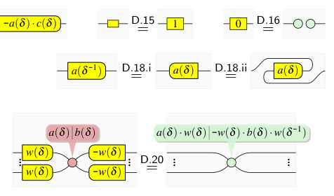
<figcaption class="paper-figure-caption"><b>Fig 1.</b> Figure 2: Axioms of the delayed stabilizer ZX-calculus.</figcaption>
</figure>
<figure class="paper-figure-card">
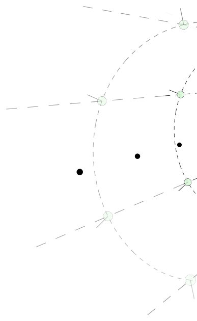
<figcaption class="paper-figure-caption"><b>Fig 2.</b> Figure 3: Infinitely unrolled surface code of Example 14. Dotted lines denote wires connected by a Hadamard gate.</figcaption>
</figure>
<figure class="paper-figure-card">

<figcaption class="paper-figure-caption"><b>Fig 3.</b> Figure 4: Axioms of the Graphical Affine Algebra [7] (GAA), where a,b,z ∈K with z ̸= 0.</figcaption>
</figure>
</div>

<p><strong>Summary.</strong> This paper introduces the delayed stabilizer ZX-calculus ($\delta$ZX), a novel graphical language designed to model quantum processes that exhibit infinite translational symmetry. By extending existing diagrammatic techniques with a 'delay' generator, it allows researchers to represent and analyze complex systems like lattice error-correcting codes. This provides a complete mathematical framework for understanding the symmetries of infinite quantum circuits.</p>
<p><strong>Why it may be interesting.</strong> It provides powerful, rigorous mathematical tools for analyzing quantum systems whose complexity arises from periodic or infinite structures, which is crucial for understanding topological quantum computation.</p>
<details>
<summary>Detailed structure</summary>
<p><strong>Main problem.</strong> Ordinary ZX-diagrams fail to capture the structure of quantum processes that are infinitely repeated across space or time, such as those found in lattice codes.</p>
<p><strong>Main result.</strong> The introduction of the delayed stabilizer ZX-calculus ($\delta$ZX) provides a finite graphical language capable of representing and uniquely determining infinite, translation-invariant stabilizer groups.</p>
<p><strong>Method.</strong> The calculus extends existing ZX-diagrams with a 'delay' generator ($\delta$) and is analyzed using two semantics: one based on equivalence classes of quantum channels, and another utilizing generating functions for Pauli operators.</p>
<p><strong>Model / system.</strong> The framework models stabilizer quantum error-correcting codes and general infinite, translation-invariant processes. It builds upon the established connection between stabilizer states, affine Lagrangian subspaces, and the ZX-calculus in finite dimensions.</p>
<p><strong>Key observables.</strong> Infinite stabilizer groups; equivalence classes of quantum channels; generating functions encoding families of Pauli operators.</p>
<p><strong>Important parameters / regimes.</strong> The delay operator ($\delta$); field $\mathbb{F}_p(\delta)$; dimension $n$; the structure of translation-invariant patterns.</p>
<p><strong>Assumptions / limitations.</strong> The core assumption is that infinite processes can be captured by extending finite diagrams with a delay element, and the mathematical machinery relies on establishing soundness, universality, and completeness for the generating tableau semantics.</p>
<p><strong>Figures summary.</strong> Figures illustrate axioms of ZX involving various phases (a, b, c, d) encoding Pauli operators; examples show tableaux for computational basis, Hadamard, and Bell states.</p>
<p><strong>Paper structure.</strong> The paper develops from establishing the finite-dimensional ZX-calculus equivalence to affine Lagrangian relations ($  ext{ALR}_{  ext{fd}}$), then introduces the delay generator $\delta$, and finally proves the full axiomatization of $\delta$ZX by reducing diagrams to a unique normal form (reduced AP-form).</p>
</details>
<details>
<summary>Abstract</summary>
<p>Many stabilizer quantum error-correcting codes are built from a finite pattern repeated across space or time, such as lattice codes, translation-invariant graph states, and quantum convolutional codes. Ordinary stabilizer ZX-diagrams capture only finite truncations of such systems, obscuring the repeated structure that defines them. We introduce the delayed stabilizer ZX-calculus, a finite graphical language for these infinite, translation-invariant processes. It extends the odd-prime-dimensional stabilizer ZX-calculus with a single new generator, the delay, which feeds data from one time step to the next. We equip the calculus with two semantics. In the first semantics, we interpret the behaviour of a delayed ZX-diagram as an equivalence class of sequences of quantum channels; where two sequences are identified if they have the same information content. We show that the behaviour of a delayed ZX-diagram uniquely determines an infinite stabilizer group. In the second semantics, we interpret the delay as a formal variable, encoding the translation-invariant families of Pauli operators as generating functions. This allows us to represent a delayed ZX-diagram in terms of a tableau of generating functions, from which the infinite stabilizer group can be recovered. Finally, we give a complete axiomatization of the delayed stabilizer ZX-calculus, featuring generalised Euler decomposition and colour change rules. Using generalised forms of local complementation and pivoting, we reduce every diagram to a unique normal form. This establishes soundness, universality, and completeness for the generating tableau semantics.</p>
</details>
<p><sub><a href="#top">↑ back to top</a></sub></p>

<p><a id="paper-2607.04095"></a></p>
<h3 id="ml-and-ai-for-density-functional-theory-different-priorities-for-kohn-sham-and-orbital-free-dft-for-electronic-and-nuclear-dft"><a href="http://arxiv.org/abs/2607.04095v1">ML and AI for density functional theory: different priorities for Kohn-Sham and orbital-free DFT, for electronic and nuclear DFT</a></h3>
<p><strong>Authors:</strong> Xin-Hui Wu, Sergei Manzhos<br>
<strong>Type:</strong> theory · <strong>Category:</strong> numerical methods · <strong>PDF:</strong> <a href="https://arxiv.org/pdf/2607.04095v1">https://arxiv.org/pdf/2607.04095v1</a><br>
<strong>Analysis basis:</strong> full PDF text, analyzed in chunks
<strong>Topic relevance:</strong> <code>Keldysh / 2PI / non-Gaussian methods</code> <strong>1/5</strong> · <code>analog quantum simulation</code> <strong>1/5</strong> · <code>methods for driven-dissipative</code> <strong>1/5</strong> · <code>non-equilibrium dynamics</code> <strong>1/5</strong></p>
<div class="figure-strip-hint">↔ Scroll figures horizontally</div>
<div class="paper-figures-scroll">
<figure class="paper-figure-card">
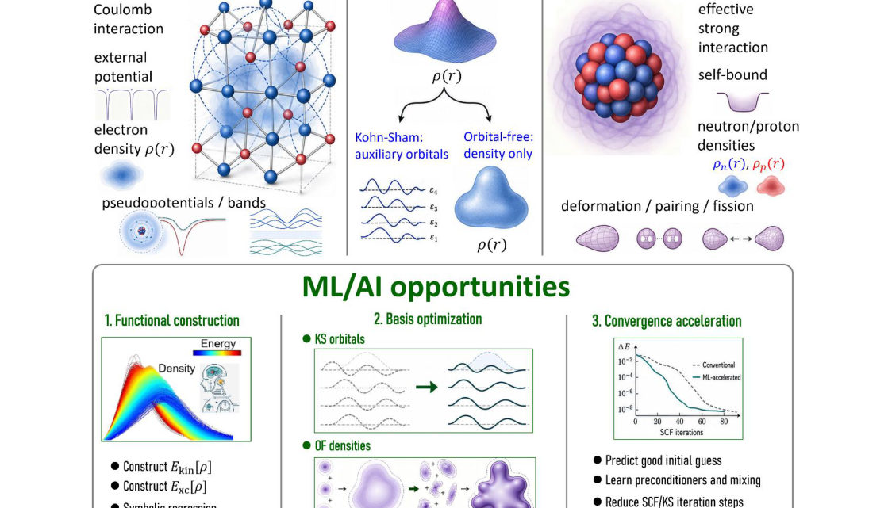
<figcaption class="paper-figure-caption"><b>Fig 1.</b> Figure 1. A visual summary of main similarities and differences between electronic and nuclear DFT in Kohn-Sham and orbital-free paradigms as well as of opportunities for ML/AI methods to improve them.</figcaption>
</figure>
<figure class="paper-figure-card">
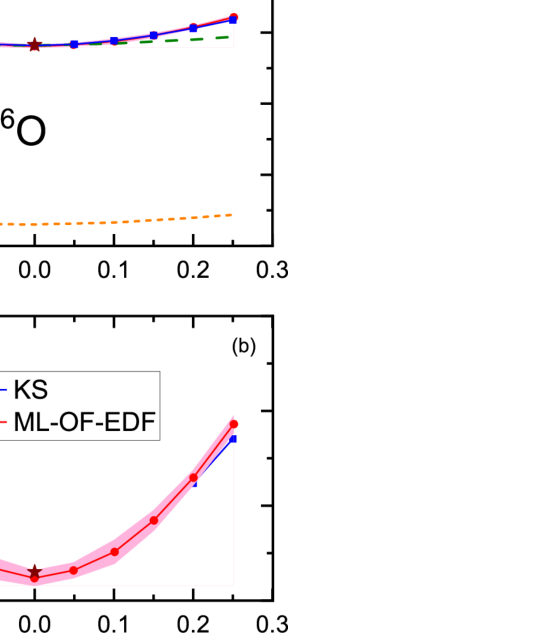
<figcaption class="paper-figure-caption"><b>Fig 2.</b> Figure 2. Potential energy curves of 16O nucleus computed with KS DFT and with OF DFT using an ML functional in Ref. 142, as a function of the quadrupole deformation parameter 2. Results from Thomas–Fermi and extended Thomas–Fermi (up to the 4th</figcaption>
</figure>
<figure class="paper-figure-card">
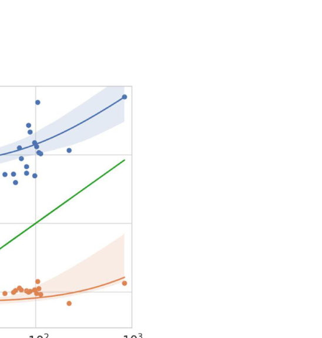
<figcaption class="paper-figure-caption"><b>Fig 3.</b> Figure 3. Computational time tests of DFT with PBE0 and DM21 functionals and CCSD(T). The horizontal axis shows the computation time for a single SCF cycle for two-atom molecules made of elements from H to Ca (neutral form and cations) using the cc-pVTZ basis set and an energy tolerance of 10−9 a.u. using the CCSD(T), while the vertical axis shows the DFT computation time of these systems with DM21 and PBE0 functionals.</figcaption>
</figure>
<figure class="paper-figure-card">

<figcaption class="paper-figure-caption"><b>Fig 4.</b> Figure 4. Workflow of the symbolic functional evolution method use to discover XC functionals in Ref. 93. (A) A population of symbolic density functionals is iteratively evolved using an evolution algorithm. Each individual in the population represents the enhancement factors in a density functional. The performance of a density functional is characterized by its fitness, defined as the negative of validation energy error. (B) In each iteration, a tournament selection is performed on a subset of individuals sampled from the population. (C) The highest-fitness individual in the tournament is selected to be the parent. (D) Then, a child functional is generated by randomly picking one of the...</figcaption>
</figure>
<figure class="paper-figure-card">
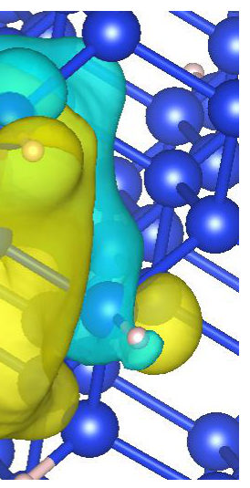
<figcaption class="paper-figure-caption"><b>Fig 5.</b> Figure 5. Example of a basis function optimized in BigDFT192 to minimum energy, starting from a p-type Si-centered function, for a hydrogen-terminated Si nanoparticle.</figcaption>
</figure>
</div>

<p><strong>Summary.</strong> This review surveys how Machine Learning and AI can revolutionize Density Functional Theory (DFT) for both electronic and nuclear structure calculations. It critically distinguishes between applying ML to the exchange-correlation functional versus approximating kinetic energy functionals directly from density. The work highlights that different physical regimes require tailored algorithmic approaches, suggesting a path forward for computationally intensive quantum simulations.</p>
<p><strong>Why it may be interesting.</strong> While focused on condensed matter/nuclear physics, the core theme of using advanced machine learning techniques to solve high-dimensional many-body equations is highly relevant to developing efficient quantum simulation methods.</p>
<details>
<summary>Detailed structure</summary>
<p><strong>Main problem.</strong> The paper addresses computational bottlenecks and accuracy requirements when applying Density Functional Theory (DFT) to both electronic and nuclear systems.</p>
<p><strong>Main result.</strong> It outlines distinct methodological pathways for incorporating Machine Learning (ML) and Artificial Intelligence (AI), distinguishing between improving the exchange-correlation functional, kinetic energy functional, or basis sets.</p>
<p><strong>Method.</strong> The authors compare standard DFT approaches (Kohn-Sham vs. Orbital-Free) with ML techniques like deep neural networks and symbolic regression to accelerate calculations.</p>
<p><strong>Model / system.</strong> The scope covers electronic systems (atoms, molecules) governed by the Schrödinger equation in a mean-field approximation, and nuclear systems involving nucleons interacting via the strong force. Both are treated using density functionals ($
ho$).</p>
<p><strong>Key observables.</strong> Electronic energies, band structures, binding energies, radii, and equations of state for nuclear matter.</p>
<p><strong>Important parameters / regimes.</strong> The dimensionality of the problem (high), the scaling cost of standard methods (e.g., cubic scaling in KS DFT), and the specific functional being approximated (XC or KEF).</p>
<p><strong>Assumptions / limitations.</strong> DFT is used to reduce N-body problems to density functionals; ML/AI must address different quantitative needs for electronic vs. nuclear systems.</p>
<p><strong>Paper structure.</strong> The paper provides an overview, first detailing the computational challenges in both electronic and nuclear DFT, then mapping out how ML/AI can target specific components (XC functional, KEF) with different algorithmic choices.</p>
</details>
<details>
<summary>Abstract</summary>
<p>We overview similarities and, importantly, differences in computational bottlenecks and accuracy requirements that can be addressed with machine learning (ML) and artificial intelligence (AI) techniques in electronic and nuclear DFT. From these follow different promising methodological and algorithmic choices depending on whether one machine learns the exchange correlation (XC) functional, the kinetic energy functional (KEF), the density or the basis functions. In particular, while the popular deep neural networks remain a potent choice in the context of KS DFT, we highlight their disadvantages when building KEFs and highlight conceptual advantages - yet to be fully realized - of symbolic regression for both electronic and nuclear DFT. We point out promising approaches that can be carried from the more extensively investigated ML-enhanced electronic DFT to nuclear DFT.</p>
</details>
<p><sub><a href="#top">↑ back to top</a></sub></p>

<p><a id="paper-2607.04669"></a></p>
<h3 id="estimation-of-a-sparse-multi-qubit-hamiltonian-via-compressed-sensing"><a href="http://arxiv.org/abs/2607.04669v1">Estimation of a sparse multi-qubit Hamiltonian via compressed sensing</a></h3>
<p><strong>Authors:</strong> Juntao Tu, Yuanlong Wang, Shuming Cheng, Shuixin Xiao, Zhibo Hou<br>
<strong>Type:</strong> theory · <strong>Category:</strong> quantum information and computing · <strong>PDF:</strong> <a href="https://arxiv.org/pdf/2607.04669v1">https://arxiv.org/pdf/2607.04669v1</a><br>
<strong>Analysis basis:</strong> full PDF text, analyzed in chunks
<strong>Topic relevance:</strong> <code>analog quantum simulation</code> <strong>1/5</strong> · <code>methods for driven-dissipative</code> <strong>1/5</strong> · <code>quantum measurements</code> <strong>1/5</strong></p>
<div class="figure-strip-hint">↔ Scroll figures horizontally</div>
<div class="paper-figures-scroll">
<figure class="paper-figure-card">

<figcaption class="paper-figure-caption"><b>Fig 1.</b> Fig. 1. The condition number of E(Φ†Φ) versus the qubit number , with the initial state being tensor product of single qubit each randomly generated from six eigenstates of cube measurement with equal probability (blue dots), or from a uniform probability distribution in Bloch sphere (red squares), and the black line shows the location where condition number is √</figcaption>
</figure>
<figure class="paper-figure-card">

<figcaption class="paper-figure-caption"><b>Fig 2.</b> Fig. 2. Simulated estimation errors for a 6-qubit Hamiltonian</figcaption>
</figure>
<figure class="paper-figure-card">

<figcaption class="paper-figure-caption"><b>Fig 3.</b> Fig. 3. Simulated estimation errors for a 30-qubit Hamiltonian</figcaption>
</figure>
<figure class="paper-figure-card">
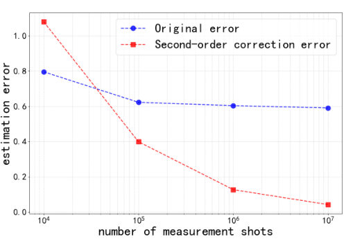
<figcaption class="paper-figure-caption"><b>Fig 4.</b> Fig. 3 shows the estimation error of the CS as a function of the number of measurement shots in the system (30).</figcaption>
</figure>
</div>

<p><strong>Summary.</strong> This paper presents a novel compressed sensing approach to estimate sparse Hamiltonians in large multi-qubit quantum systems. The key innovation is the 'scale transformation' technique, which mathematically restores necessary properties (RIP) to overcome ill-conditioning as the number of qubits increases. This allows for efficient Hamiltonian characterization using far fewer measurements than classically required.</p>
<p><strong>Why it may be interesting.</strong> This work directly addresses the scalability bottleneck in quantum characterization, providing a theoretically rigorous method (scale transformation) to estimate complex Hamiltonians that would otherwise be intractable due to exponential parameter growth.</p>
<details>
<summary>Detailed structure</summary>
<p><strong>Main problem.</strong> The core challenge is estimating a sparse Hamiltonian for large multi-qubit systems, where the number of parameters grows exponentially.</p>
<p><strong>Main result.</strong> The authors propose a 'scale transformation' technique that restores the Restricted Isometry Property (RIP) to allow compressed sensing reconstruction even for high qubit numbers.</p>
<p><strong>Method.</strong> The problem is formulated as solving a linear system $\bar{y} = \Phi h$ using Compressed Sensing, which requires specialized techniques like scale transformation to overcome ill-conditioning.</p>
<p><strong>Model / system.</strong> The study concerns the Hamiltonian ($H$) of an N-qubit quantum system, where $H$ is assumed to be sparse. The evolution is governed by $\dot{
ho}(t) = -i[H, \rho(t)]$.</p>
<p><strong>Key observables.</strong> Expectation values $\langle M_j \rangle_{\rho_i}$ measured from the system state.</p>
<p><strong>Important parameters / regimes.</strong> Qubit number ($N$), sparsity level ($k$), and measurement count ($m$).</p>
<p><strong>Assumptions / limitations.</strong> The Hamiltonian is $k$-sparse, and the method relies on random sampling of observables and states to ensure mathematical properties like RIP.</p>
<p><strong>Figures summary.</strong> Figures illustrate the condition number increasing with N, showing failure for standard CS methods, and demonstrate successful estimation in 6- and 30-qubit systems using the proposed techniques.</p>
<p><strong>Paper structure.</strong> The paper first establishes the linear measurement model $\bar{y} = \Phi h$. It then identifies the RIP failure as $N$ increases. The core contribution is developing and proving the 'scale transformation' to restore RIP, followed by numerical demonstrations on large systems.</p>
</details>
<details>
<summary>Abstract</summary>
<p>Hamiltonian estimation is an effective approach in studying the structure and dynamical evolution of quantum systems. The difficulty in estimating the Hamiltonian is that an $N$-qubit Hamiltonian has $4^N-1$ unknown parameters, requiring exponentially many equations for information extraction. In this paper we develop a method based on compressed sensing to estimate the Hamiltonian of a multi-qubit system. We identify a problem where as $N$ increases, the common sufficient condition (Restricted Isometry Property) for compressed sensing often fails, obstructing the application of compressed sensing in ($N\geq 3$)-qubit Hamiltonian estimation. To solve this problem, we propose a ``scale transformation" technique to restore RIP and ensure a compressive estimation of a $k$-sparse Hamiltonian using only $O(k\log(4^N/k))$ equations. In the numerical examples, we estimate the Hamiltonians of two 6- and 30-qubit systems, demonstrating the effectiveness of the method.</p>
</details>
<p><sub><a href="#top">↑ back to top</a></sub></p>

<p><a id="paper-2607.04207"></a></p>
<h3 id="uniform-mixing-and-math999math-uniform-mixing-on-cycles"><a href="http://arxiv.org/abs/2607.04207v1">Uniform mixing and $ε$-uniform mixing on cycles</a></h3>
<p><strong>Authors:</strong> Xiwang Cao, Cuiwen Zhu<br>
<strong>Type:</strong> theory · <strong>Category:</strong> other · <strong>PDF:</strong> <a href="https://arxiv.org/pdf/2607.04207v1">https://arxiv.org/pdf/2607.04207v1</a><br>
<strong>Analysis basis:</strong> full PDF text, analyzed in chunks
<strong>Topic relevance:</strong> <code>analog quantum simulation</code> <strong>1/5</strong> · <code>driven-dissipative phase transition</code> <strong>1/5</strong> · <code>non-equilibrium dynamics</code> <strong>1/5</strong></p>
<div class="figure-strip-hint">↔ Scroll figures horizontally</div>
<div class="paper-figures-scroll">
<figure class="paper-figure-card">
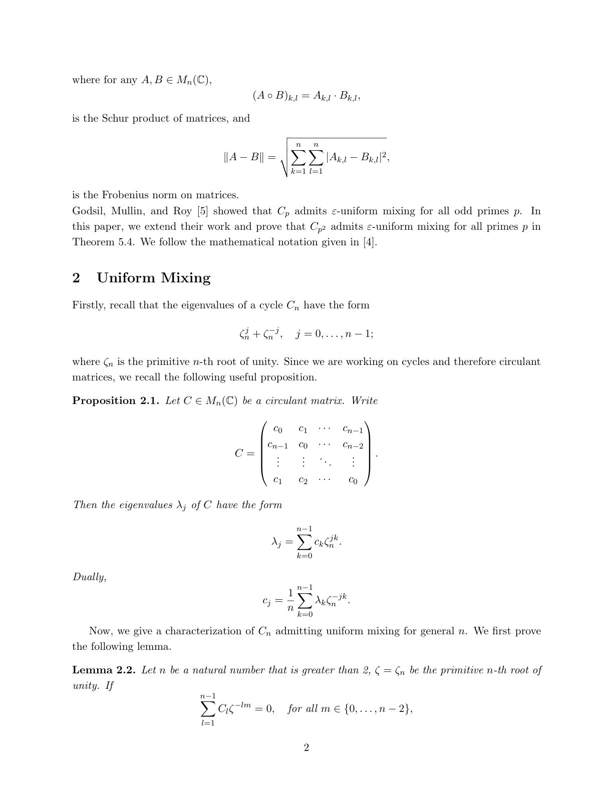
<figcaption class="paper-figure-caption"><b>Fig 1.</b> Low-resolution page preview, page 2</figcaption>
</figure>
<figure class="paper-figure-card">
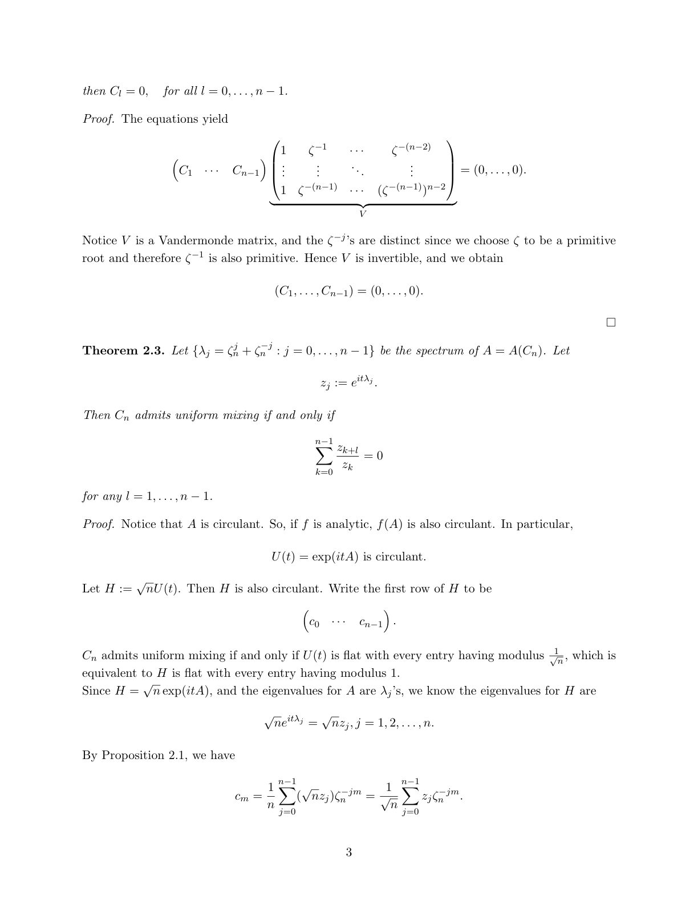
<figcaption class="paper-figure-caption"><b>Fig 2.</b> Low-resolution page preview, page 3</figcaption>
</figure>
<figure class="paper-figure-card">
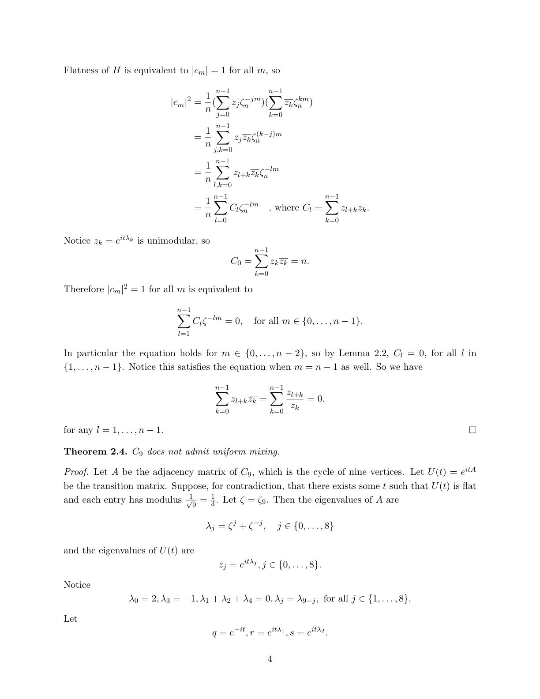
<figcaption class="paper-figure-caption"><b>Fig 3.</b> Low-resolution page preview, page 4</figcaption>
</figure>
<figure class="paper-figure-card">
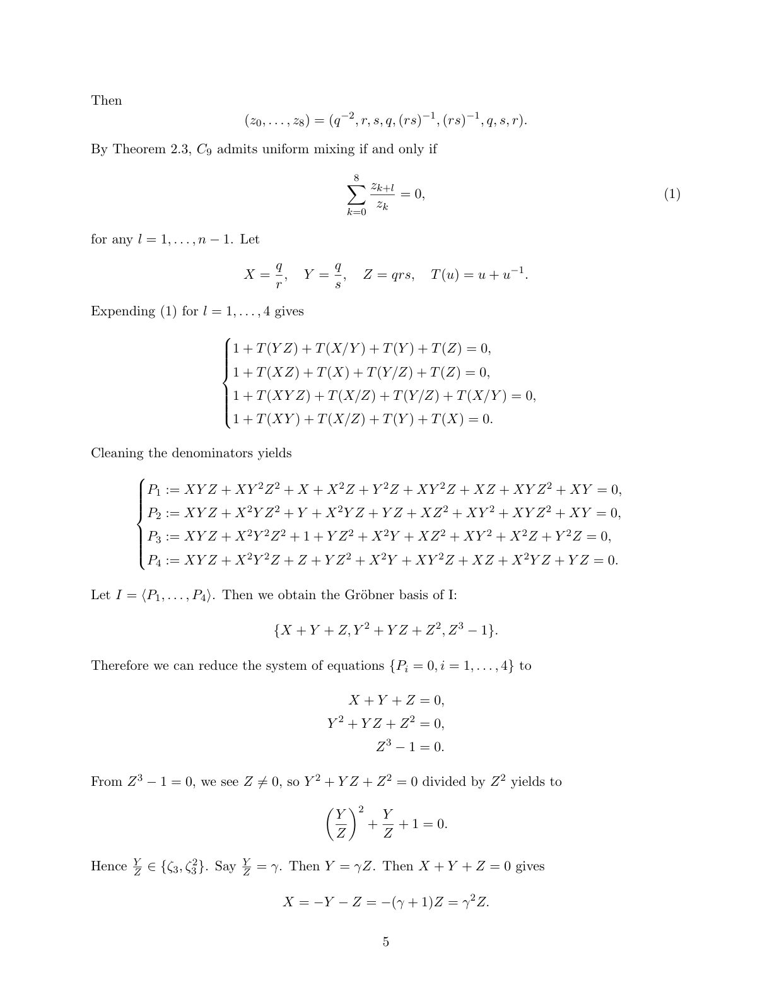
<figcaption class="paper-figure-caption"><b>Fig 4.</b> Low-resolution page preview, page 5</figcaption>
</figure>
<figure class="paper-figure-card">

<figcaption class="paper-figure-caption"><b>Fig 5.</b> Low-resolution page preview, page 6</figcaption>
</figure>
</div>

<p><strong>Summary.</strong> This paper mathematically analyzes the mixing behavior of continuous-time quantum walks on cycle graphs. It establishes that certain cycles, such as $C_9$ and $C_{15}$, fail to achieve perfect uniform mixing at any time. Conversely, it proves a positive result by showing that for all prime powers $p^2$, the walk achieves $\epsilon$-uniform mixing.</p>
<p><strong>Why it may be interesting.</strong> The rigorous mathematical analysis connecting graph structure (cycles) to quantum dynamical properties like mixing rates is highly relevant for understanding decoherence or thermalization in open quantum systems.</p>
<details>
<summary>Detailed structure</summary>
<p><strong>Main problem.</strong> The study investigates the conditions under which continuous-time quantum walks on cycle graphs exhibit uniform or $\epsilon$-uniform mixing.</p>
<p><strong>Main result.</strong> The paper proves that $C_9$ and $C_{15}$ never achieve uniform mixing, while demonstrating that for every prime $p$, the cycle $C_{p^2}$ does admit $\epsilon$-uniform mixing.</p>
<p><strong>Method.</strong> The analysis combines spectral graph theory (using eigenvalues of the adjacency matrix) with advanced algebraic techniques like solving polynomial systems via Gröbner bases to derive necessary conditions for mixing.</p>
<p><strong>Model / system.</strong> The model is a continuous-time quantum walk evolving on a cycle graph $C_n$, governed by the unitary evolution operator $U(t) = \exp(itA)$, where $A$ is the adjacency matrix of $C_n$.</p>
<p><strong>Key observables.</strong> Uniform mixing (requiring $|U(t)_{u,v}|^2 = 1/n$) and $\epsilon$-uniform mixing ($\|U(t) \circ U(t)^{*−1} - nJ\| < \epsilon$).</p>
<p><strong>Important parameters / regimes.</strong> The cycle length $n$ (specifically $C_9$, $C_{15}$, and $C_{p^2}$), the time $t$, and the error tolerance $\epsilon$.</p>
<p><strong>Assumptions / limitations.</strong> The analysis heavily relies on properties derived from circulant matrices and algebraic number theory related to roots of unity.</p>
<p><strong>Paper structure.</strong> The paper proceeds by first establishing general conditions for uniform mixing using spectral properties, then applying these methods via Gröbner basis computations to disprove mixing for $C_9$ and $C_{15}$, concluding with a constructive proof of $\epsilon$-uniform mixing for $C_{p^2}$.</p>
</details>
<details>
<summary>Abstract</summary>
<p>We study continuous-time quantum walks on cycles. We prove two complementary results. Firstly, the cycle $C_9$ does not admit uniform mixing at any time. Using the similar idea and Dickson polynomials, we prove that $C_{15}$ does not admit uniform mixing at any time neither. Secondly, for every prime $p$, we show that the cycle $C_{p^2}$ admits $ε$-uniform mixing.</p>
</details>
<p><sub><a href="#top">↑ back to top</a></sub></p>

<p><a id="paper-2607.05109"></a></p>
<h3 id="characterisation-of-a-satellite-to-ground-channel-for-continuous-variable-quantum-key-distribution-protocol"><a href="http://arxiv.org/abs/2607.05109v1">Characterisation of a satellite-to-ground channel for continuous variable quantum key distribution protocol</a></h3>
<p><strong>Authors:</strong> Emma Tien Hwai Medlock, Vinod N. Roa, Timothy Spiller, Rupesh Kumar<br>
<strong>Type:</strong> theory · <strong>Category:</strong> quantum information and computing · <strong>PDF:</strong> <a href="https://arxiv.org/pdf/2607.05109v1">https://arxiv.org/pdf/2607.05109v1</a><br>
<strong>Analysis basis:</strong> full PDF text, analyzed in chunks
<strong>Topic relevance:</strong> <code>interference shaping light</code> <strong>1/5</strong> · <code>quantum optics experiment</code> <strong>1/5</strong></p>
<div class="figure-strip-hint">↔ Scroll figures horizontally</div>
<div class="paper-figures-scroll">
<figure class="paper-figure-card">
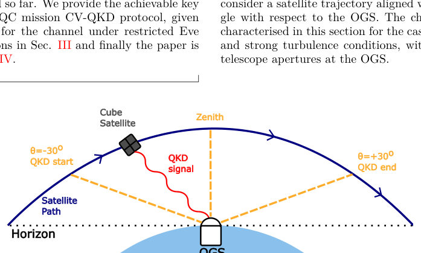
<figcaption class="paper-figure-caption"><b>Fig 1.</b> Figure 1: Satellite pass over the OGS. Here, the CV-QKD exchange occurs between zenith angles −30◦and +30◦. For this scenario, the satellite will have an altitude of 550 km.</figcaption>
</figure>
<figure class="paper-figure-card">

<figcaption class="paper-figure-caption"><b>Fig 2.</b> Figure 2: C2 N profiles as a function of altitudes (shown on the top) and the weighted C2 N profile for 550 km downlink as a function of zenith angles (shown on the bottom). Here the power law parameter for day time pday = 1.33 was used, random background turbulence parameter M = 1, root-mean-square high altitude wind speed vw = 21 m/s, and with the initial turbulence strengths as seen in the parameter table.</figcaption>
</figure>
<figure class="paper-figure-card">

<figcaption class="paper-figure-caption"><b>Fig 3.</b> Figure 3: Point ahead angle for a given satellite altitude. The PAA changes with increasing altitudes of the satellite, ranging from 250 km to 2000 km. This is a typical range for LEO satellites.</figcaption>
</figure>
<figure class="paper-figure-card">
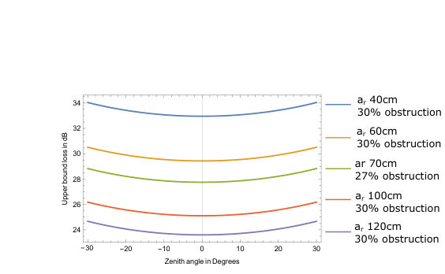
<figcaption class="paper-figure-caption"><b>Fig 4.</b> Figure 4: Total upper bound channel loss with differing receiver aperture sizes. This was done for a strong turbulence regime, with a wavelength of 1550 nm, a transmitter aperture of 8 cm, a pointing error at the satellite of 4 µrad, and with the satellite at an altitude of 550 km.</figcaption>
</figure>
<figure class="paper-figure-card">

<figcaption class="paper-figure-caption"><b>Fig 5.</b> Figure 5: The losses as a dependency of wavelength at the zenith is plotted. Here the atmospheric absorption lines have not been taken into consideration. The losses are plotted for a receiver aperture of 60 cm with 30% obstruction, a transmitter aperture of 8 cm, a pointing error at the satellite of 4 µrad, and with the satellite at an altitude of 550 km. This is the loss for a Gaussian modulated CV (GMCV) QKD protocol. For DV-QKD, there will be additional losses due to phase error [50–52] that GMCV does not need to consider as the transmitted local oscillator will experience the same phase drift as the quantum signal [53–55].</figcaption>
</figure>
</div>

<p><strong>Summary.</strong> This paper characterizes the complex, zenith-angle dependent channel loss for continuous variable QKD links between satellites and ground stations. By modeling atmospheric turbulence effects, the authors demonstrate that despite these significant fluctuations in signal attenuation, secure key generation remains feasible under specific security assumptions.</p>
<p><strong>Why it may be interesting.</strong> This work directly addresses the engineering challenges of implementing quantum communication in dynamic, real-world environments like space, which is a major focus area bridging quantum optics and applied physics.</p>
<details>
<summary>Detailed structure</summary>
<p><strong>Main problem.</strong> The primary challenge is characterizing the dynamic channel loss experienced by continuous variable (CV)-Quantum Key Distribution (QKD) signals transmitted from a satellite to a ground station.</p>
<p><strong>Main result.</strong> Despite the highly dynamic nature of the channel loss due to changing zenith angles, the authors show that it is possible to generate a positive secret key rate under restricted security assumptions.</p>
<p><strong>Method.</strong> The methodology involves modeling the varying channel loss by integrating atmospheric structure parameters (like weighted C2^N) over the path length determined by the zenith angle. Key rates are then calculated based on these characterized loss parameters.</p>
<p><strong>Model / system.</strong> The system modeled is a space-based CV-QKD link, specifically referencing parameters for the SPOQC mission at 550 km altitude using 1550 nm wavelength light.</p>
<p><strong>Key observables.</strong> Channel loss (dynamic), achievable secret key rate, weighted C2^N profiles, and turbulence strengths.</p>
<p><strong>Important parameters / regimes.</strong> Satellite altitude (550 km), Wavelength (1550 nm), Zenith angle range ($-30^\circ$ to $+30^\circ$), Turbulence regimes (low, medium, high).</p>
<p><strong>Assumptions / limitations.</strong> The analysis relies on restricted Eve security assumptions and models the channel loss based on practical atmospheric propagation assumptions.</p>
<p><strong>Figures summary.</strong> Figure 1 illustrates the QKD exchange window over zenith angles; Figure 2 shows profiles of C2^N versus altitude and weighted C2^N versus zenith angle, mapping turbulence strength.</p>
<p><strong>Paper structure.</strong> The paper first characterizes the varying channel loss under practical assumptions for different turbulence strengths (Section II), followed by an analysis of the resulting achievable key rates for the CV-QKD protocol (Section III).</p>
</details>
<details>
<summary>Abstract</summary>
<p>In space based quantum key distribution (QKD) protocols, the quantum channel will be dynamic in nature and the channel loss will change with respect to the zenith angle. In the context of continuous variable (CV)-QKD, this will cause issues with parameter estimation and for a transmitted local oscillator in particular it will also fluctuate the shot noise. Therefore, it is vital to characterise this channel loss and the sources of this loss. In this paper the varying channel loss is characterised under practical assumptions. This is shown for various different scenarios, turbulence strengths, as well as wavelengths. This work shows, for the channel parameters considered, it is possible to generate a positive secret key if restricted Eve security assumptions are made.</p>
</details>
<p><sub><a href="#top">↑ back to top</a></sub></p>

<p><a id="paper-2607.04936"></a></p>
<h3 id="noise-limited-secret-key-agreement-with-twin-optical-physically-unclonable-functions"><a href="http://arxiv.org/abs/2607.04936v1">Noise-limited secret key agreement with twin optical physically unclonable functions</a></h3>
<p><strong>Authors:</strong> Georgios M. Nikolopoulos<br>
<strong>Type:</strong> theory · <strong>Category:</strong> quantum information and computing · <strong>PDF:</strong> <a href="https://arxiv.org/pdf/2607.04936v1">https://arxiv.org/pdf/2607.04936v1</a><br>
<strong>Analysis basis:</strong> full PDF text, analyzed in chunks
<strong>Topic relevance:</strong> <code>entanglement &amp; information structure</code> <strong>1/5</strong> · <code>interference shaping light</code> <strong>1/5</strong></p>
<div class="figure-strip-hint">↔ Scroll figures horizontally</div>
<div class="paper-figures-scroll">
<figure class="paper-figure-card">
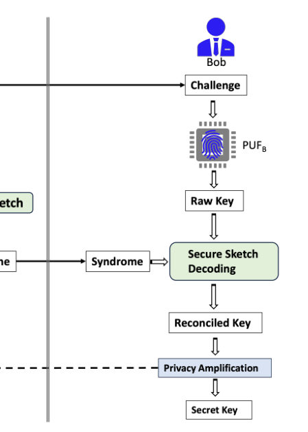
<figcaption class="paper-figure-caption"><b>Fig 1.</b> Figure 1. Schematic representation of the main steps in the key agreement with twin PUFs.</figcaption>
</figure>
<figure class="paper-figure-card">

<figcaption class="paper-figure-caption"><b>Fig 2.</b> Figure 2. The maximum BER Qmax (a) and the corresponding channel capacity Cmin (b), are shown for different standard deviations of fabrication and environmental noise. The results have been obtained for 200 independent twins and 200 independent realizations for each twin. The fabrication and environmental noise have been treated as described in Sec. 2 . Other parameters: N = 104, l/L = 0.2, 1−bit SLM, transmission geometry.</figcaption>
</figure>
</div>

<p><strong>Summary.</strong> This paper proposes using twin optical PUFs as a physical source for establishing secret keys between two parties. It develops an explicit, information-theoretic key-agreement protocol that accounts for noise and fabrication imperfections. The work demonstrates how this hardware platform can securely generate pre-shared keys, potentially seeding Quantum Key Distribution networks without relying on computational assumptions.</p>
<p><strong>Why it may be interesting.</strong> This work bridges quantum optics (light scattering in disordered media) with quantum information theory by proposing a hardware-based method for generating cryptographic keys, which is highly relevant to quantum networking infrastructure.</p>
<details>
<summary>Detailed structure</summary>
<p><strong>Main problem.</strong> To develop an information-theoretic protocol for establishing a shared secret key using twin optical Physical Unclonable Functions (PUFs) that is robust against noise and environmental variability.</p>
<p><strong>Main result.</strong> The authors developed a general, explicit key-agreement protocol incorporating secure sketches, error reconciliation, and privacy amplification, showing feasibility in specific noise regimes.</p>
<p><strong>Method.</strong> The methodology involves modeling the PUF response using correlated optical scattering matrices and applying established cryptographic techniques (error correction codes) to distill a secret key from noisy raw measurements.</p>
<p><strong>Model / system.</strong> The physical platform is based on twin Optical PUFs, where fingerprints are derived from speckle patterns generated by coherent light scattering through disordered optical structures. The underlying model uses transmission matrices whose elements are treated as complex Gaussian random variables.</p>
<p><strong>Key observables.</strong> Speckle pattern intensity, final secret key length (lower bound), and the disagreement probability (Bit-Error Rate).</p>
<p><strong>Important parameters / regimes.</strong> Fabrication variability ($\sigma_F$), environmental noise ($\sigma_E$), and the maximum allowed Hamming distance ($t$).</p>
<p><strong>Assumptions / limitations.</strong> The protocol assumes that the challenge conveys no information about the PUF output, and it is designed to function without relying on computational assumptions or trusted third parties.</p>
<p><strong>Figures summary.</strong> Figure 1 schematically illustrates the main steps in key agreement using twin PUFs, detailing the flow from raw measurements through reconciliation to the final shared secret key.</p>
<p><strong>Paper structure.</strong> The paper first models the optical PUF response mathematically, then develops an information-theoretic protocol incorporating error correction and privacy amplification. It analyzes the security bounds based on noise parameters and concludes by discussing integration into QKD networks.</p>
</details>
<details>
<summary>Abstract</summary>
<p>We investigate the use of twin optical fingerprints derived from correlated physical unclonable functions (PUFs), as a hardware-based platform for cryptographic key generation and distribution. Each fingerprint is associated with a random, yet reproducible speckle pattern, generated when coherent light is scattered by a disordered optical structure. We consider a pair of correlated optical PUFs, and study the conditions under which two honest parties can establish a common secret key, despite fabrication-induced variability and environmental noise. An explicit information-theoretic key-agreement protocol is developed, incorporating secure sketches, error reconciliation, and privacy amplification. We quantify information leakage due to public helper data, and derive lower bounds on the length of the final secret key. The analysis identifies the noise regimes in which secure key agreement is feasible, and examines the performance of both practical and near-capacity reconciliation schemes. Finally, we discuss how twin optical PUFs could be integrated into quantum key distribution (QKD) networks, as a mechanism for establishing an initial pre-shared secret key between two honest users, without relying on computational assumptions or trusted third parties.</p>
</details>
<p><sub><a href="#top">↑ back to top</a></sub></p>

<p><a id="paper-2607.03905"></a></p>
<h3 id="on-estimating-operator-norm-distance-with-optimal-trace-distance-estimation-when-one-state-is-pure"><a href="http://arxiv.org/abs/2607.03905v1">On estimating operator norm distance, with optimal trace distance estimation when one state is pure</a></h3>
<p><strong>Authors:</strong> Yupan Liu, Qisheng Wang, Zhan Yu<br>
<strong>Type:</strong> theory · <strong>Category:</strong> quantum information and computing · <strong>PDF:</strong> <a href="https://arxiv.org/pdf/2607.03905v1">https://arxiv.org/pdf/2607.03905v1</a><br>
<strong>Analysis basis:</strong> full PDF text, analyzed in chunks
<strong>Topic relevance:</strong> <code>entanglement &amp; information structure</code> <strong>1/5</strong> · <code>quantum measurements</code> <strong>1/5</strong></p>
<div class="figure-strip-hint">↔ Scroll figures horizontally</div>
<div class="paper-figures-scroll">
<figure class="paper-figure-card">
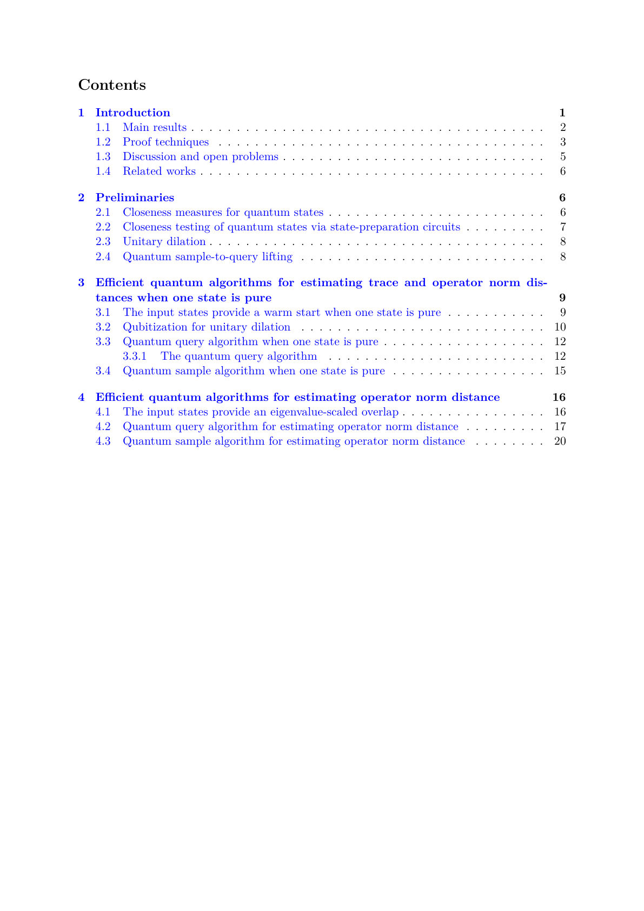
<figcaption class="paper-figure-caption"><b>Fig 1.</b> Low-resolution page preview, page 2</figcaption>
</figure>
<figure class="paper-figure-card">
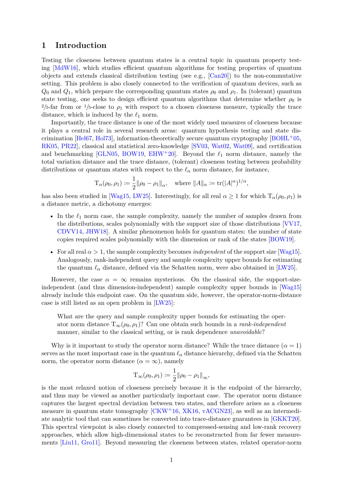
<figcaption class="paper-figure-caption"><b>Fig 2.</b> Low-resolution page preview, page 3</figcaption>
</figure>
<figure class="paper-figure-card">

<figcaption class="paper-figure-caption"><b>Fig 3.</b> Low-resolution page preview, page 4</figcaption>
</figure>
<figure class="paper-figure-card">

<figcaption class="paper-figure-caption"><b>Fig 4.</b> Low-resolution page preview, page 5</figcaption>
</figure>
<figure class="paper-figure-card">

<figcaption class="paper-figure-caption"><b>Fig 5.</b> Low-resolution page preview, page 6</figcaption>
</figure>
</div>

<p><strong>Summary.</strong> This paper develops efficient quantum algorithms to estimate the operator norm distance between two quantum states. It achieves a breakthrough by providing estimators whose query complexity is independent of the state's rank, particularly when one state is pure. This significantly improves upon existing methods that scaled poorly with the dimension of the Hilbert space.</p>
<p><strong>Why it may be interesting.</strong> This work provides fundamental algorithmic improvements for quantum information tasks, showing how structural properties (like purity) can lead to exponential speedups in estimating physical quantities like state distinguishability.</p>
<details>
<summary>Detailed structure</summary>
<p><strong>Main problem.</strong> The paper investigates the computational complexity of estimating the operator norm distance, $T_{\infty}(
ho_0, 
ho_1)$, between two quantum states $
ho_0$ and $
ho_1$. The goal is to find estimators whose query complexity is independent of the state rank.</p>
<p><strong>Main result.</strong> For the case where one state is pure, an optimal quantum estimator achieving $O(1/\epsilon)$ queries is provided, which is exponentially faster than prior methods dependent on state rank. For general states, a $\widetilde{O}(1/\epsilon^{3/2})$ query complexity estimator is derived.</p>
<p><strong>Method.</strong> The authors utilize quantum query algorithms and techniques involving phase estimation applied to the difference operator $\Delta = (
ho_0 - 
ho_1)/2$. The analysis leverages structural properties, particularly when one state is pure, to establish 'warm starts' for the estimators.</p>
<p><strong>Model / system.</strong> The system involves $n$-qubit quantum states ($
ho_0, 
ho_1$) prepared via polynomial-size circuits. The focus is on quantifying the distance between these states using operator norm and trace norms.</p>
<p><strong>Key observables.</strong> Operator norm distance ($T_{\infty}$), Trace distance ($T$), Eigenvalues of difference operators ($\Delta$).</p>
<p><strong>Important parameters / regimes.</strong> Error tolerance $\epsilon$, Number of qubits $n$, State rank/dimension (which the results aim to be independent of).</p>
<p><strong>Assumptions / limitations.</strong> The states are prepared using polynomial-size quantum circuits. The analysis relies on establishing overlap guarantees, especially when one state is pure.</p>
<p><strong>Paper structure.</strong> The paper progresses by first analyzing the optimal case (one pure state) to establish a rank-independent bound, then extending this to the general case for arbitrary states. The technical sections detail the application of phase estimation and error bounding techniques.</p>
</details>
<details>
<summary>Abstract</summary>
<p>We investigate the computational complexity of estimating the operator norm distance ${\rm T}_{\infty}(ρ_0,ρ_1)$, defined via the operator norm $\|A\|_{\infty} = σ_{\max}(A)$, given ${\rm poly}(n)$-size state-preparation circuits of $n$-qubit quantum states $ρ_0$ and $ρ_1$. We provide efficient quantum estimators for the operator norm distance whose complexity is independent of the rank (and thus the dimension) of the states:   1. When one state is pure, we establish an optimal quantum estimator using $Θ(1/ε)$ queries to the state-preparation circuits. Consequently, for constant additive error, say $ε=1/5$, our estimator runs in ${\rm poly}(n)$ time. Since the operator norm distance ${\rm T}_{\infty}(|ψ\rangle\!\langleψ|,ρ)$ is exactly half of the trace distance ${\rm T}(|ψ\rangle\!\langleψ|,ρ)$, our result also gives rank-independent query complexity for estimating both quantities, whereas the approaches due to van Apeldoorn, Cornelissen, Gily{é}n, and Nannicini (SODA 2023) and Wang and Zhang (TIT 2024) have query complexity scaling at least linearly with ${\rm rank}(ρ)$, which can be $\exp(n)$ in general.   2. For general quantum states, we also provide a quantum estimator using $\widetilde{O}(1/ε^{3/2})$ queries to the state-preparation circuits, which shows that the corresponding promise problem is ${\sf BQP}$-complete and improves the ${\sf QMA}$ upper bound sketched by Liu and Wang (ESA 2025). Together with an $Ω(1/ε)$ quantum query complexity lower bound, this leaves only square-root room for improvement.   The key intuition behind our estimators is that, when one state is pure, the pure state $|ψ\rangle$ has overlap at least $1/2$ with the top unit eigenvector of $|ψ\rangle\!\langleψ|-ρ$, reflecting a structural feature specific to the operator norm distance.</p>
</details>
<p><sub><a href="#top">↑ back to top</a></sub></p>

<p><a id="paper-2607.04519"></a></p>
<h3 id="schrodinger-oscillator-and-its-thermal-properties-in-a-dynamical-noncommutative-space"><a href="http://arxiv.org/abs/2607.04519v1">Schrodinger Oscillator and its Thermal Properties in a Dynamical Noncommutative Space</a></h3>
<p><strong>Authors:</strong> Ilyas Haouam<br>
<strong>Type:</strong> theory · <strong>Category:</strong> statistical mechanics · <strong>PDF:</strong> <a href="https://arxiv.org/pdf/2607.04519v1">https://arxiv.org/pdf/2607.04519v1</a><br>
<strong>Analysis basis:</strong> full PDF text, analyzed in chunks
<strong>Topic relevance:</strong> <code>Keldysh / 2PI / non-Gaussian methods</code> <strong>1/5</strong> · <code>driven-dissipative phase transition</code> <strong>1/5</strong></p>
<div class="figure-strip-hint">↔ Scroll figures horizontally</div>
<div class="paper-figures-scroll">
<figure class="paper-figure-card">
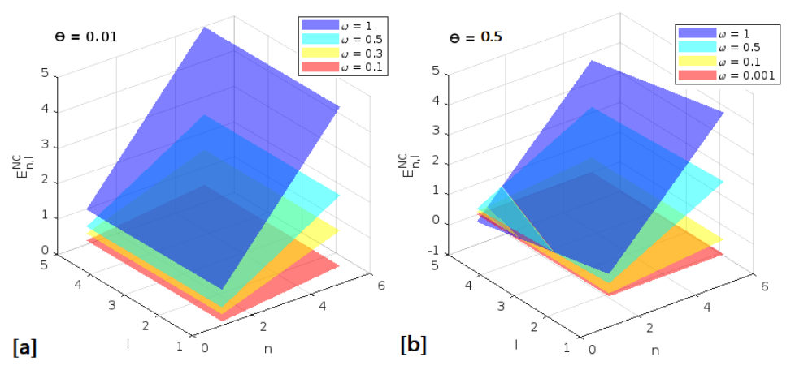
<figcaption class="paper-figure-caption"><b>Fig 1.</b> Figure 1: 3D plots of the NC energy eigenvalues ENC n,l as a function of quantum numbers n &amp; l, shown for</figcaption>
</figure>
<figure class="paper-figure-card">
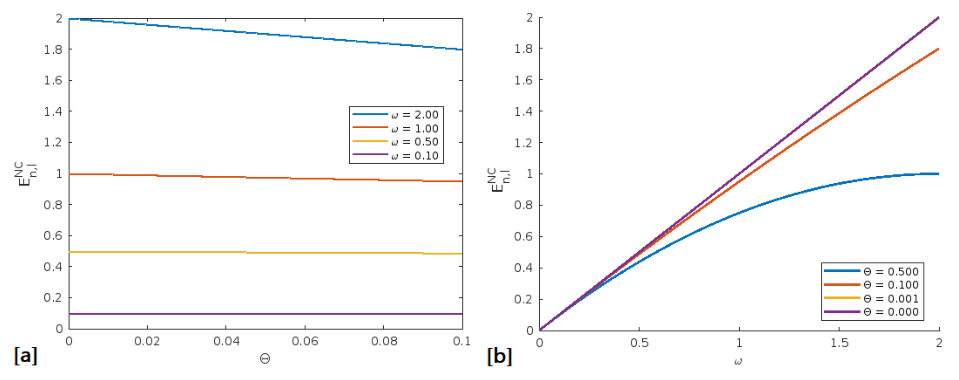
<figcaption class="paper-figure-caption"><b>Fig 2.</b> Figure 2: (a) Energy eigenvalues ENC n,l as a function of Θ, shown for different values of the oscillator angular</figcaption>
</figure>
<figure class="paper-figure-card">
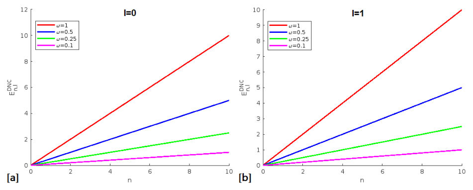
<figcaption class="paper-figure-caption"><b>Fig 3.</b> Figure 3: The DNC energy eigenvalues EDNC n,l as a function of the quantum number n, shown for different</figcaption>
</figure>
<figure class="paper-figure-card">

<figcaption class="paper-figure-caption"><b>Fig 4.</b> Figure 4: The DNC energy eigenvalues EDNC n,l as a function of the quantum number l, shown for different</figcaption>
</figure>
<figure class="paper-figure-card">

<figcaption class="paper-figure-caption"><b>Fig 5.</b> Figure 5: 3D plots of the NC energy eigenvalues ENC n,l as a function of NC and DNC parameters Θ and τ,</figcaption>
</figure>
</div>

<p><strong>Summary.</strong> This paper theoretically examines how modifying the spatial structure of space using Dynamical Noncommutative (DNC) geometry affects the energy levels and thermal behavior of a 2D Schrödinger oscillator. By applying perturbation theory and analyzing the partition function, the authors quantify the impact of noncommutativity parameters ($\Theta$ and $   au$) on thermodynamic observables like entropy and specific heat.</p>
<p><strong>Why it may be interesting.</strong> The incorporation of noncommutative geometry into standard quantum models like the harmonic oscillator provides a theoretical framework for exploring physics at very small scales (like those relevant in quantum gravity), which can manifest observable effects on thermodynamic quantities.</p>
<details>
<summary>Detailed structure</summary>
<p><strong>Main problem.</strong> The study investigates the thermal properties and energy eigenvalues of a two-dimensional Schrödinger oscillator subjected to dynamical noncommutative (DNC) space modifications.</p>
<p><strong>Main result.</strong> The analysis shows that both noncommutativity ($\Theta$) and DNC deformation ($    au$) modify the system's energy spectrum and thermodynamic quantities, with specific effects observed in different temperature regimes.</p>
<p><strong>Method.</strong> The research employs perturbation theory to calculate first-order corrections to the eigensystem and utilizes the partition function ($Z$) to analyze thermal properties across various temperature limits.</p>
<p><strong>Model / system.</strong> The model is a 2D Schrödinger oscillator whose dynamics are governed by a Hamiltonian defined on a Dynamical Noncommutative (DNC) space. This geometry introduces position-dependent commutation relations, $\Theta(X, Y)$.</p>
<p><strong>Key observables.</strong> Partition function ($Z$), Free energy ($F$), Internal energy ($U$), Specific heat capacity ($C$), and Entropy ($S$).</p>
<p><strong>Important parameters / regimes.</strong> The DNC parameter ($    au$), the noncommutativity parameter ($\Theta$), and the thermal inverse temperature ($eta$) are crucial parameters governing the system's behavior.</p>
<p><strong>Assumptions / limitations.</strong> The analysis relies on assuming that $   au$ and $\Theta$ are small enough for perturbation theory to be valid, and it addresses inherent non-Hermiticity by employing transformations like the Dyson map.</p>
<p><strong>Figures summary.</strong> Figures illustrate the dependence of thermodynamic quantities ($Z, F, U, C, S$) on parameters such as temperature ($eta$), oscillator frequency ($\omega$), $\Theta$, and $    au$.</p>
<p><strong>Paper structure.</strong> The paper systematically derives the modified Hamiltonian using perturbation theory, calculates the energy eigenvalues incorporating both NC and DNC terms, and then uses these results to compute and analyze the full set of thermal observables ($Z, F, U, C, S$) across different temperature regimes.</p>
</details>
<details>
<summary>Abstract</summary>
<p>In this paper, we study the two-dimensional Schrodinger oscillator within a dynamical noncommutative (DNC) space. By leveraging perturbation theory, we derive the energy eigenvalues and eigenvectors and systematically analyze the effects of both dynamical and non-dynamical noncommutative settings. First-order corrections to the eigensystem are obtained, revealing that the energy shift explicitly depends on the DNC parameter tau. Furthermore, we explore the thermal properties of the system by employing the partition function. Numerical results are presented to provide a comprehensive analysis of the system behavior under the considered effects. Notably, in the DNC framework, the commutation relations and the deformation parameter are position-dependent. Using the two-dimensional Bopp-shift, we effectively map the noncommutative problem to its commutative counterpart.</p>
</details>
<p><sub><a href="#top">↑ back to top</a></sub></p>

<p><a id="paper-2607.04393"></a></p>
<h3 id="atomic-oven-with-rapid-thermal-response-for-atom-experiments"><a href="http://arxiv.org/abs/2607.04393v1">Atomic oven with rapid thermal response for atom experiments</a></h3>
<p><strong>Authors:</strong> Weilong Huang, Congjun Zou, Feiyu Dong, Huirong Xiao, Zejian Ren, Shanchao Zhang<br>
<strong>Type:</strong> experiment · <strong>Category:</strong> other · <strong>PDF:</strong> <a href="https://arxiv.org/pdf/2607.04393v1">https://arxiv.org/pdf/2607.04393v1</a><br>
<strong>Analysis basis:</strong> full PDF text, analyzed in chunks
<strong>Topic relevance:</strong> <code>non-equilibrium dynamics</code> <strong>1/5</strong></p>
<div class="figure-strip-hint">↔ Scroll figures horizontally</div>
<div class="paper-figures-scroll">
<figure class="paper-figure-card">
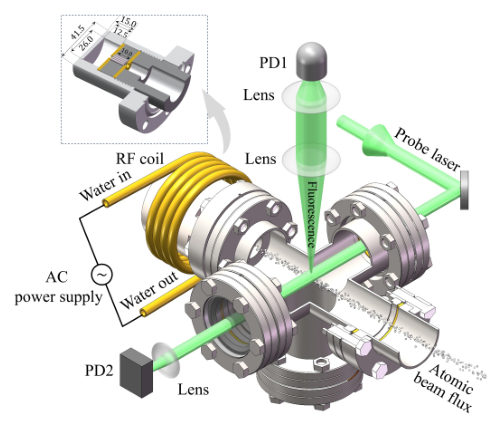
<figcaption class="paper-figure-caption"><b>Fig 1.</b> FIG. 1. Experimental setup of the inductively heated atomic source and optical detection system. A radio-frequency- driven copper induction coil surrounds the atomic crucible, while fluorescence and absorption of the atomic beam are probed downstream using a resonant laser. Inset: Schematic of the atomic crucible and collimating nozzle geometry. The crucible is machined from 304 stainless steel and optimized by balancing eddy current penetrating depth considerations and vacuum machining constraints. Key geometrical parameters, including crucible wall thickness and capillary dimensions, are indicated in units of millimeters (mm).</figcaption>
</figure>
<figure class="paper-figure-card">
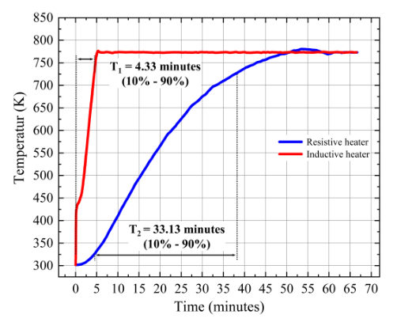
<figcaption class="paper-figure-caption"><b>Fig 2.</b> FIG. 2. Time-resolved temperature evolution of the atomic crucible under resistive heater (blue) and inductive heater (red), measured under identical geometrical configurations and target temperature (773 K). The time constants T1 and T2 represent the 10 %–90 % rise times, indicating the significantly faster thermal response of the inductive heating method.</figcaption>
</figure>
<figure class="paper-figure-card">
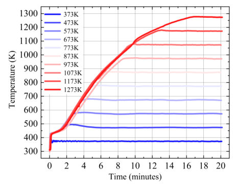
<figcaption class="paper-figure-caption"><b>Fig 3.</b> FIG. 3. Wide-range thermal setpoint-programmed heating. Time-resolved temperature profiles demonstrating the sys- tem’s ability to rapidly reach and maintain precise target temperatures across an extensive range from 373 K to 1273 K. This confirms not only the fast thermal response but also the high maximum operating temperature and excellent long- term stability of the inductive heating setup.</figcaption>
</figure>
</div>

<p><strong>Summary.</strong> The paper introduces an innovative inductive heating design for atomic ovens used in quantum physics experiments. This new heater significantly accelerates the temperature ramp-up time compared to conventional resistive heaters while maintaining high stability up to 1200 K. The resulting oven can generate highly collimated, high-flux atomic beams, promising to drastically improve efficiency in cold atom research.</p>
<p><strong>Why it may be interesting.</strong> This work directly addresses a critical engineering bottleneck (slow thermal response) in cold atom and quantum gas experiments, providing a robust platform necessary for increasing experimental uptime and repetition rates in AMO research.</p>
<details>
<summary>Detailed structure</summary>
<p><strong>Main problem.</strong> The slow thermal response time of conventional resistive heating methods used in atomic ovens significantly prolongs apparatus preparation time for quantum gas experiments.</p>
<p><strong>Main result.</strong> A new inductive heater design was developed, achieving a 7.65-fold improvement in heating rate and enabling stable operation up to 1200 K while generating high-flux ytterbium beams.</p>
<p><strong>Method.</strong> The authors designed and tested an atomic oven using inductive heating via an AC driven copper coil, comparing its performance against traditional resistive heating methods.</p>
<p><strong>Model / system.</strong> The system is an atomic oven used to generate a controllable, collimated beam of atoms (e.g., Yb). The thermal dynamics are modeled using heat transfer equations ($rac{C_p}{m}rac{dT}{dt} = P_{in} - P_{loss}$), and the control loop uses PI feedback.</p>
<p><strong>Key observables.</strong> Atomic flux exceeding $10^{14} 	ext{ atoms/s}$, temperature stability ($\Delta T < \pm 2	ext{ K}$), and heating rate comparison (7.65x improvement).</p>
<p><strong>Important parameters / regimes.</strong> Temperature range up to $1200	ext{ K}$; flux measurement at $823	ext{ K}$.</p>
<p><strong>Assumptions / limitations.</strong> The superior power transfer scaling of inductive coupling compared to contact-based resistive heating for refractory elements.</p>
<p><strong>Figures summary.</strong> Figures compare time-resolved temperature evolution (resistive vs. inductive), show wide-range thermal setpoint programming, and display fluorescence spectroscopy confirming measured flux dependence on temperature.</p>
<p><strong>Paper structure.</strong> The paper details the limitations of current ovens, introduces the inductive heating design based on theoretical modeling, presents experimental results comparing speed and stability against resistive methods, and concludes with measurements of high-flux atomic beams suitable for advanced quantum experiments.</p>
</details>
<details>
<summary>Abstract</summary>
<p>Atomic oven generating controllable atomic beam flux plays a fundmental role in quantum gas experiments. Here, we report a new heater design that can heat up an high temperature atomic oven with fast thermal response. The new heater shows a heating rate improved by 7.65 times comparing to that of the onventional resistive heater while the crucible temperature can heated up to 1200K. With this oven, we generated a collimated ytterbium beam with flux exceeding $10^{14} \text{ atoms/s}$ at 823 K. We believe that our design offers a promising solution for shortening experimental dead time and improve the experiment efficiency in cold atom researches.</p>
</details>
<p><sub><a href="#top">↑ back to top</a></sub></p>

<p><a id="paper-2607.04072"></a></p>
<h3 id="benchmarking-api-drift-in-llm-generated-quantum-code-across-successive-sdk-versions"><a href="http://arxiv.org/abs/2607.04072v1">Benchmarking API Drift in LLM-Generated Quantum Code Across Successive SDK Versions</a></h3>
<p><strong>Authors:</strong> Mohammad Arif Rasyidi, Syahirul Faiz<br>
<strong>Type:</strong> theory · <strong>Category:</strong> other · <strong>PDF:</strong> <a href="https://arxiv.org/pdf/2607.04072v1">https://arxiv.org/pdf/2607.04072v1</a><br>
<strong>Analysis basis:</strong> full PDF text, analyzed in chunks
<strong>Topic relevance:</strong> <code>methods for driven-dissipative</code> <strong>1/5</strong></p>
<div class="figure-strip-hint">↔ Scroll figures horizontally</div>
<div class="paper-figures-scroll">
<figure class="paper-figure-card">

<figcaption class="paper-figure-caption"><b>Fig 1.</b> Figure 1: Version fidelity (Pass@1 on the target version, i.e., diagonal of the drift matrix) for all models and all three Qiskit versions. Error bars show 95% Wilson confidence intervals. The v1.3 column is consistently the weakest across models.</figcaption>
</figure>
<figure class="paper-figure-card">

<figcaption class="paper-figure-caption"><b>Fig 2.</b> Figure 2: Drift matrices (Pass@1) for the four strongest models. Rows denote the prompted Qiskit version; columns denote the execution environment. The diagonal represents version fidelity. Low values in the middle column (v1.3) are a consistent finding across models.</figcaption>
</figure>
<figure class="paper-figure-card">
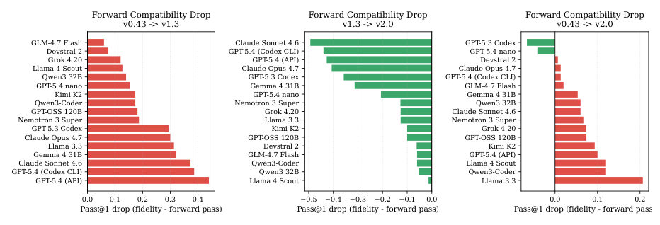
<figcaption class="paper-figure-caption"><b>Fig 3.</b> Figure 3: Forward compatibility drop: reduction in Pass@1 when code is executed in a newer version than its target. Positive values indicate degradation; negative values indicate the code runs better in the newer version (a sign the model ignores version anchors and generates modern code regardless).</figcaption>
</figure>
<figure class="paper-figure-card">

<figcaption class="paper-figure-caption"><b>Fig 4.</b> Figure 4 shows two broad failure regimes. Lower-fidelity models are dominated by ImportError, which points to broken module or symbol references. Higher-fidelity models shift toward DeprecationWarning, which suggests that the code structure is often correct but tied to older interfaces. Grok 4.20 sits between these two regimes. Table 3 reports raw error counts for the five most frequent error types per model, providing absolute scale alongside the normalized view.</figcaption>
</figure>
<figure class="paper-figure-card">
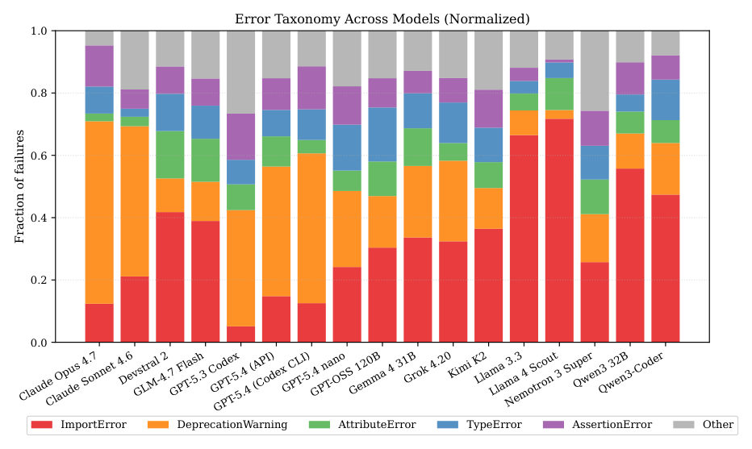
<figcaption class="paper-figure-caption"><b>Fig 5.</b> Figure 4: Normalized error taxonomy across models. Weaker models are dominated by ImportError, indicating structural module confusion. Stronger models shift toward DeprecationWarning, suggesting version-lagged but structurally correct code. Error types shown are those with the highest aggregate frequency.</figcaption>
</figure>
</div>

<p><strong>Summary.</strong> This paper benchmarks 'API drift' by testing how well LLMs generate quantum code compatible with specific versions of an SDK like Qiskit. It introduces the quantum-api-drift benchmark, finding that version alignment is difficult and highly dependent on the target SDK release. The results highlight that while models show varying strengths across different API epochs, robust cross-version compatibility remains a significant challenge.</p>
<p><strong>Why it may be interesting.</strong> While not directly about AMO physics, this work is highly relevant to the <em>implementation</em> of quantum algorithms. Reliable code generation across evolving SDKs is a major bottleneck in translating theoretical quantum circuits into executable hardware instructions.</p>
<details>
<summary>Detailed structure</summary>
<p><strong>Main problem.</strong> The core problem is 'API drift,' which measures the inability of Large Language Models (LLMs) to reliably generate quantum code that targets a specific, requested version of a Software Development Kit (SDK). This failure mode is critical for deploying LLM-generated quantum algorithms.</p>
<p><strong>Main result.</strong> Version alignment remains only partly recoverable even with documentation guidance; furthermore, the performance varies significantly across SDK versions, with v1.3 being notably difficult to target compared to v0.43 and v2.0.</p>
<p><strong>Method.</strong> The authors introduced 'quantum-api-drift,' a benchmark that tests LLMs on 50 quantum programming tasks across three Qiskit SDK versions (v0.43, v1.3, v2.0). Success is measured by execution success rates and cross-version compatibility.</p>
<p><strong>Model / system.</strong> The system under test is the generation of quantum code using Qiskit, a representative quantum computing SDK that has undergone substantial interface changes across its versions. The models evaluated are various commercial LLMs (e.g., Claude Opus 4.7, Grok 4.20) accessed via REST APIs.</p>
<p><strong>Key observables.</strong> Diagonal Pass@1 rates (version fidelity), off-diagonal compatibility metrics, failure modes ($ ext{ImportError}$ vs. $ ext{DeprecationWarning}$), and documentation-guided repair success rates.</p>
<p><strong>Important parameters / regimes.</strong> The three SDK versions tested are v0.43, v1.3, and v2.0; the evaluation is constrained by a 1024-token output cap for matched REST API settings.</p>
<p><strong>Assumptions / limitations.</strong> The benchmark primarily measures API-level validity (successful execution without exceptions) rather than guaranteed semantic circuit correctness, which requires structural assertions due to necessary SDK-agnostic rewriting.</p>
<p><strong>Figures summary.</strong> Figures illustrate version fidelity heatmaps showing Pass@1 rates across the three versions; tables summarize overall diagonal performance and compatibility drops between versions.</p>
<p><strong>Paper structure.</strong> The paper introduces the API drift problem, details the quantum-api-drift benchmark setup using Qiskit's historical versions, presents quantitative results comparing multiple LLMs on version fidelity and repair success, and concludes by establishing version alignment as a distinct evaluation axis for code generation.</p>
</details>
<details>
<summary>Abstract</summary>
<p>Large language models can generate plausible quantum code, but it is unclear whether they can reliably target the specific software development kit (SDK) version requested by the user. We study this problem as API drift and introduce quantum-api-drift, a benchmark for measuring version fidelity, defined here as execution success on the requested SDK version, cross-version compatibility, failure modes, and documentation-guided repair in LLM-generated quantum SDK code. We instantiate the benchmark with Qiskit, a representative quantum SDK that underwent substantial interface changes across v0.43, v1.3, and v2.0. We evaluate 17 models on 50 tasks with 3 samples per prompt, yielding 450 generated samples and 1,350 executions per model. Sixteen models are tested in a matched REST API setting with a 1024-token output cap, while GPT-5.4 (Codex CLI) is reported separately as a reference configuration. Across the 16 matched REST models, diagonal Pass@1 ranges from 0.02 to 0.85. Claude Opus 4.7 is strongest on v0.43 and v2.0, while Grok 4.20 is strongest on v1.3 at 0.513. Error profiles differ systematically by model strength: weaker models fail mainly with broken imports, while stronger models more often reach deprecation-level failures. Documentation-guided repair succeeds for 0.19 to 0.59 of repair attempts overall and is consistently much more effective for migration to v2.0 than to v1.3. The benchmark artifacts are publicly available at https://github.com/arasyi/quantum-api-drift. These results show that version alignment is a distinct evaluation axis for quantum code generation and that API drift remains only partly recoverable even with migration guidance.</p>
</details>
<p><sub><a href="#top">↑ back to top</a></sub></p>

<p><a id="paper-2607.05094"></a></p>
<h3 id="brownian-motion-in-orthogonal-and-symplectic-groups"><a href="http://arxiv.org/abs/2607.05094v1">Brownian Motion in Orthogonal and Symplectic Groups</a></h3>
<p><strong>Authors:</strong> Zhiyang Tan, Piet W. Brouwer<br>
<strong>Type:</strong> theory · <strong>Category:</strong> other · <strong>PDF:</strong> <a href="https://arxiv.org/pdf/2607.05094v1">https://arxiv.org/pdf/2607.05094v1</a><br>
<strong>Analysis basis:</strong> full PDF text, analyzed in chunks
<strong>Topic relevance:</strong> <code>Keldysh / 2PI / non-Gaussian methods</code> <strong>1/5</strong></p>
<div class="figure-strip-hint">↔ Scroll figures horizontally</div>
<div class="paper-figures-scroll">
<figure class="paper-figure-card">

<figcaption class="paper-figure-caption"><b>Fig 1.</b> FIG. 1: Diagrammatic representation of the tensors I2, S2, and X2 (top) and their multiplication rules (bottom) in the orthogonal case.</figcaption>
</figure>
<figure class="paper-figure-card">
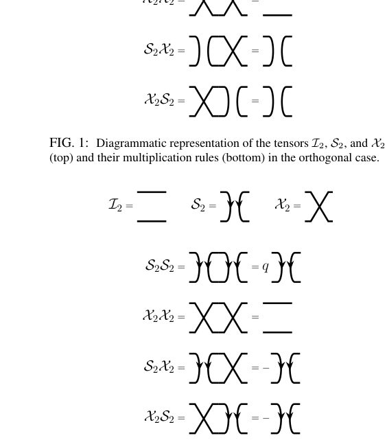
<figcaption class="paper-figure-caption"><b>Fig 2.</b> FIG. 2: Diagrammatic representation of the tensors I2, S2, and X2 and their multiplication rules for the symplectic (oriented) case. Note the introduction of a negative sign in the product of S2 and X2, which follows from reversing the orientation of the solid line on the left end of the diagram.</figcaption>
</figure>
<figure class="paper-figure-card">

<figcaption class="paper-figure-caption"><b>Fig 3.</b> FIG. 3: Diagrammatic representations of the tensors I3, S3, X3, S′ 3, and X ′ 3 in the symplectic case. Diagrammatic representations for the orthogonal case are obtained by omitting the orientations indicated by the arrows (compare Figs. 1 and 2).</figcaption>
</figure>
<figure class="paper-figure-card">

<figcaption class="paper-figure-caption"><b>Fig 4.</b> FIG. 4: Junction between topological superconductors S1 and S2 with Chern numbers C1 &gt; 0 and C2 &lt; 0. The number of chi- ral Majorana edge modes at the superconductor-vacuum boundary is qj = |Cj|, j = 1, 2. At the interface between the two superconduc- tors, there are q = q1 + q2 co-propagating chiral Majorana modes.</figcaption>
</figure>
<figure class="paper-figure-card">

<figcaption class="paper-figure-caption"><b>Fig 5.</b> FIG. 5: Diagrammatic representations of I4, S4, X4, ˜S4, ˜ X4, ˜S′ 4, T4, S′ 4, T ′ 4, S′′ 4 , X ′ 4, and X ′′ 4 for the symplectic case. Diagrammatic representations for the orthogonal case are obtained by omitting the orientations on the arcs connecting indices on the same side of each diagram.</figcaption>
</figure>
</div>

<p><strong>Summary.</strong> This paper develops a comprehensive diagrammatic framework to analyze Brownian motion on orthogonal and symplectic random matrices. It calculates moment operators up to the fourth order, providing explicit mathematical tools for studying quantum chaos and transport phenomena in systems with particle-hole symmetry. The results are valuable for understanding spectral properties in complex many-body quantum systems.</p>
<p><strong>Why it may be interesting.</strong> This work is highly relevant as it extends random matrix theory techniques (originally developed for unitary ensembles) to systems with specific symmetries like particle-hole symmetry, which are crucial in condensed matter physics (e.g., superconductors).</p>
<details>
<summary>Detailed structure</summary>
<p><strong>Main problem.</strong> The paper develops a unified diagrammatic framework to characterize Brownian ensembles for orthogonal and symplectic random matrices, which are used to study systems with particle-hole symmetry.</p>
<p><strong>Main result.</strong> It provides explicit calculations for polynomial averages (moment operators) up to the fourth order ($k=4$) for these non-unitary matrix dynamics, establishing recurrence relations based on tensor algebra.</p>
<p><strong>Method.</strong> The authors use a diagrammatic approach to calculate time evolution operators $U_k(t) = e^{L_k t}$ and trace moments by expanding in powers of the coupling constant or time parameter.</p>
<p><strong>Model / system.</strong> The study concerns matrix Brownian motion on orthogonal ($O(q)$) and symplectic ($Sp(q)$) groups, relevant for quantum chaos, quantum transport, and many-body dynamics exhibiting particle-hole symmetry. The evolution is governed by random Hermitian matrices constrained by an antiunitary involution.</p>
<p><strong>Key observables.</strong> Polynomial averages $\langle U_{k} i_1 \dots i'_k 
angle$, moment operators $U_k(t)$, and trace moments $R_{i_1, \dots, i_m}(t)$.</p>
<p><strong>Important parameters / regimes.</strong> The order of the moment ($k$), system size ($q$), and time ($t$). The long-time limit converges to Haar-distributed ensembles.</p>
<p><strong>Assumptions / limitations.</strong> Calculations rely on defining basis tensors ($I_k, S_k, X_k$) whose multiplication rules are derived diagrammatically; some results assume invariance under transformations between $SO(q)$ and $O(q)$.</p>
<p><strong>Figures summary.</strong> Figures 1 &amp; 2 show the diagrammatic representations and multiplication rules for basis tensors ($I_2, S_2, X_2$) in both orthogonal and symplectic cases. Further figures illustrate higher-rank tensor diagrams.</p>
<p><strong>Paper structure.</strong> The paper progresses by first establishing the framework for calculating moment operators $U_k(t)$ diagrammatically (up to $k=4$). It details the algebra of basis tensors, calculates explicit forms for $U_2(t)$, $U_3(t)$, and finally provides complex analytical expressions for $U_4(t)$ and associated trace moments.</p>
</details>
<details>
<summary>Abstract</summary>
<p>Matrix Brownian motion provides a powerful framework for studying crossover ensembles in quantum chaos and quantum transport, as well as thermalization and information scrambling in many-body dynamics. Here, we develop a unified diagrammatic framework to characterize Brownian ensembles for orthogonal and symplectic random matrices, which describe systems with particle-hole symmetry. We compute polynomial averages up to fourth order and construct an orthogonally invariant interpolation for the disconnected $\mathrm{SO}^-(q)$ sector of the orthogonal group. We consider applications relating to the fields of quantum information, quantum chaos, and quantum transport.</p>
</details>
<p><sub><a href="#top">↑ back to top</a></sub></p>
<hr>
<p>
<a href="index.html">← Index</a>
 · <a href="papers_05.html">← Previous</a> · <a href="papers_07.html">Next →</a>
</p>
<hr>

</body>
</html>
